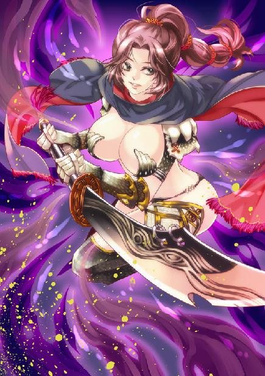
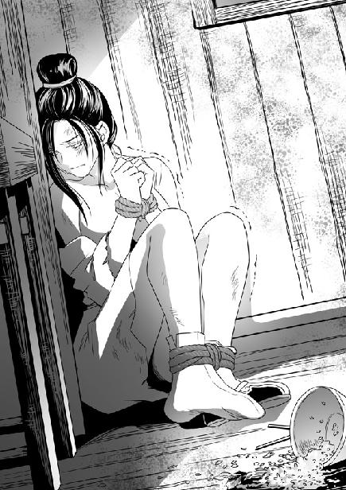
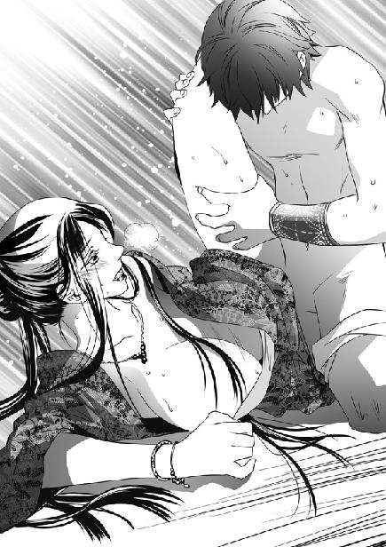

第14集·握雾拏云
建康篇（2/8）
出版日期：2010-09-10
【本集内容简介】
堂堂太乙真宗教御却变成老鸨的阶下囚，恩将仇报的卓云君落入程宗扬与小紫手中。小紫夸口七日内将卓云君调教成任由人搓圆捏扁的小女人，说什么程宗扬都要和她赌上一赌！
有萧遥逸与云苍峰相助，再加上现代商人的灵活手腕，程宗扬一宴成名，但也拜萧遥逸所赐，“光屁股跳水”的荒唐壮举也传遍秦淮。不过和风流公子萧遥逸相比，光屁股跳水总比光屁股杀敌来得体面……
※ ※ ※ ※ ※

封面人物：云丹琉

插图：卓云君

插图：周妙芸
程宗扬小心伏在屋瓦倾颓下来的缝隙中，他怕被两人察觉到自己的目光，只把一只眼微微睁开一线，用眼角的余光窥视殿内的情形。
没想到两个都是爽快人，说翻脸就翻脸。卓云君那一剑去势极快，眼看就要从齐放鹤身前透胸而过，齐放鹤杏黄的道袍突然一荡，掀起一片涟漪，胸前的八卦图案旋转飞出，挡住凤羽剑的锋芒。接着齐放鹤狭长的眼睛透出精光，反手拔出背后的大剑。
齐放鹤身材矮小，用的剑却又阔又大，一剑劈出，殿内的空气都仿佛被剑气带动，发出风雷般的声音。
卓云君右手长剑疾挑，击飞齐放鹤的太极图，接着左手拇指、食指、中指三指相扣，无名指、尾指翘起，玉白的指间腾出一团烈焰，弹指朝齐放鹤射去。
齐放鹤双手握剑，招式丝毫未变，朝卓云君颈侧疾劈，肩头快捷无伦地左右一挑，肩上两个太极图突然扩大，旋转飞出。卓云君掷出的烈焰被太极图一扑，立刻火消烟灭，化为乌有。
程宗扬这下可开了眼界，太乙真宗两位顶尖人物交手，那场面不是一般的精彩。卓云君剑法轻捷精妙，凤羽剑在掌中盘旋飞舞，剑脊上天然生成的凤羽纹光华四射，华丽无匹。齐放鹤的宽刃大剑招式却质朴之极，一招一式绝无花巧，直劈硬刺，与卓云君斗了个旗鼓相当。
但更精彩的还是两人频频施展的各种法术。卓云君玉指轻拈，纤掌中烈焰一收，喝道：“断月金！”一道刀锋般的白光应声从掌中飞出，配合右手凤羽剑的犀利攻势，射向齐放鹤肋下。
齐放鹤狭长的眼睛似睁似闭，眼中精光偶尔一闪，犹如寒星。他袍服一震，胸前的太极八卦图从袍上飞出。上下通连、中间断开的离卦猛然张开，仿佛一张大口将白光吞下，化解了卓云君的攻势。
卓云君拇指、中指勾起，扣在一处，其余三指摊开，掌若兰花，一条青色的细藤在指间蜿蜓而出，瞬间化作一条长藤。藤身数以万计的细小花蕾同时开放，每一朵都绽出金色的花蕊，每一只花蕊都映出黄昏的阳光，光华耀眼。
“商阳木！”
齐放鹤面无表情，身前八卦图一转，乾、兑两卦迎向青藤，以金克木，将卓云君的法术破解得干干净净。
卓云君收回左掌，食、中二指并起，在空中一抹，喝道：“长冥水！”
一道暗黑色的水光在虚空中浮现，随着她玉指的动作妖幻舞动，刹那间拉开丈许。
齐放鹤跨前一步，太极图中的阴阳鱼微微错开，周围转动的八卦中，属土的坤、艮两卦凸起，挡住卓云君的长冥之水。
“斩蛟沙！”
“太初火！”
卓云君空出的左掌白金、青木、黑水、赤火、黄土五行轮番施为，相生相克变幻无穷，异彩纷呈，令人眼花缭乱。齐放鹤则是太极八卦包打天下，无论卓云君施展的是烈焰还是寒冰，他都是一个太极八卦图，火来水挡，土来木克，水出土掩，以不变应万变。
程宗扬估量一下，这两人的修为比自己可高明太多了，即便武二那厮，在两人剑下只怕也讨不了好处。自己认识的人中，能与两人一战的，也许只有谢艺。至于殇侯，那老东西深藏不露，自己还没有见过他出手，不好衡量。
两人交手半个时辰，谁也没有占到上风。卓云君姣美的面孔仿佛蒙上一层寒霜，冷冷道：“齐师兄闭关一年，修为大有精进。”
“无极生太极，太极生两仪，两仪生四象，四象生八卦。无论你五行如何变化，都在我太极之中！”说着齐放鹤须眉一张，厉声喝道：“弃剑！随我到龙池总坛，伏首认罪！”
卓云君心下恨极，她刺伤蔺采泉不假，但蔺采泉说自己抢夺九阳神功，完全是恶意栽赃。此举可谓一石二鸟的毒计，听说事情与太乙真宗镇教之宝九阳神功有关，齐放鹤即便不信，也不会轻易放过自己。卓云君深知这位师兄外淡内苛，一旦被他擒住，免不了受到严刑拷打。另一方面，蔺采泉透出九阳神功在手的风声，不啻于暗示众人，掌教真人亲自传经于他，好借着王哲的声威，给自己押下一块重重的砝码。
齐放鹤剑势大开大阖，接连两剑，破开卓云君的攻势，沉声喝道：“教中元老均在龙池，你随我返回总坛，将原委剖析明白，是非曲直自有公断。若曲在蔺师兄，我齐放鹤自会主持公道！”
卓云君挑眉道：“以为我是三岁小儿吗！”
齐放鹤寒声道：“你若执迷不悟，莫怪我下手无情！”
齐放鹤大剑一挥，剑刃透出无数电光，重重劈在凤羽剑上。卓云君剑势越发散乱，忽然纤手一颤，凤羽剑被齐放鹤一记重手震得歪斜，接着脱手飞出。
卓云君勃然大怒，双掌一分，玉白的掌中现出一道细细的金色光芒。接着一片火红的光焰亮起，顷刻间化作一条燃烧的长羽。
齐放鹤失声叫道：“烈焰凤羽！”
卓云君美目光芒大盛，瞳孔深处映出那片烈焰飞舞的凤羽，然后清啸一声，玉掌张开，那条燃烧的凤羽箭矢般飞出。
齐放鹤抛开大剑，双手一合，拇指、中指相扣，食指张开，无名指、尾指蜷起并在一处，接着暴喝一声，道服宽大的袍袖中飞出一面金色的凹镜，迎向卓云君的烈焰凤羽。
卓云君露出惊骇的目光，“金乌镜！你竟然——”
齐放鹤神情一瞬间变得狰狞，“死吧！”
那面凹镜仿佛一轮太阳，放射出刺眼的光芒，犹如无数利箭同时射出。这一下两人都是全力施为，烈焰凤羽与金乌镜撞在一处，巨大的轰鸣声使整个大殿都为之震动，卷起的气浪将两人同时掀开，接着轰然一声，大殿一角被气浪摧毁，泥土和砖瓦雨点般掉落下来。
两人同时向后飞出，倒地不起。齐放鹤道袍被烈焰焚毁殆尽，左手皮肉尽数焦枯。卓云君唇角鲜血长流，殷红一片，脸色白得仿佛透明，淡青色的道袍被无数细小的阳光射穿，破洞间露出白腻的肌肤。
坛上的道君像在气浪中摇晃几下，然后倒落下来，在两人之间跌得粉碎。
塑像后的黑袍道人用衣袖遮住头脸，等气浪平息，才直起腰，用袍袖拂了拂身上的灰土，一脸嘻笑地从坛上跳下。
“哈哈……哈哈哈哈……”
吴行德发出一阵大笑，一面拂着衣袍，一面好整以暇地说道：“齐师叔，卓师叔，两位功力精深，弟子好生佩服。”
卓云君眼中透出一丝绝望。吴行德是蔺采泉门下弟子，自己与齐放鹤两败俱伤，若落到蔺采泉手中，必定凶多吉少。
吴行德走到齐放鹤身边，恭敬地行了一礼，“齐师叔。”
齐放鹤吸了口气，“扶我起身，擒……擒……”
吴行德拾起凤羽剑，笑眯眯道：“没想到齐师叔闭关这些日子，连金乌镜都炼了出来，难怪师尊说起齐师叔的进境，每每忧形于色。可惜啊可惜，齐师叔刚刚出关，竟然就死在卓教御这逆贼剑下……”
说着吴行德提起长剑，一剑刺穿齐放鹤的胸膛，凤羽剑血光乍现，硬生生将他钉在地上。
齐放鹤双目圆睁，口中喷出血来，手脚抽动片刻，脖颈一歪，死于非命。吴行德拔出凤羽剑，满意地看了看，然后扭头笑道：“卓师叔，小侄这一剑使得不错吧，是不是很有几分师叔你的风采？”
卓云君咯了口血，怒道：“欺师灭祖的逆徒！有种你连我一并杀了！我在地下看着蔺采泉那老狗有什么好结果！”
吴行德提着滴血的长剑走到卓云君身边，一脸嘻笑地说：“师叔这是哪里的话？欺师灭祖这种事，弟子是不敢做的。齐教御明明是被师叔的烈焰凤羽重伤，又被师叔的凤羽剑一剑穿心，你瞧，师叔衣上还有齐教御的血呢。”
说着吴行德把长剑送到卓云君身下，一脸猥亵地将血迹抹在卓云君胯间。
卓云君玉颊一瞬间涨得通红，厉声道：“吴行德！”
吴行德行淫笑道：“卓教御这身皮肉，真真是爱煞人呢……”
他提起凤羽剑，放在卓云君丰挺的胸前，剑尖伸进道袍被金乌镜射出的破洞中，下流地拨弄着里面白嫩的乳肉。
卓云君美目中仿佛喷出火来，忽然身体一挺，朝剑锋撞去。
吴行德连忙撤剑，却慢了少许，剑锋划开道袍，在卓云君乳下挑出一道血淋淋的伤痕。
吴行德一脚踩在卓云君胸口，把她踢倒，狞笑道：“卓教御好烈性。嘿嘿，蔺师透出风声，说掌教遗命会在玄真观出现，就知道卓教御定会上当，这才命小侄带了齐教御来，在此等候。”
吴行德踩住卓云君，一剑挑开她的衣带，一边舔了舔唇角，“卓教御花容月貌，不知迷倒了多少人。啧啧，师叔数十年守身如玉，今日却便宜了小侄。识相呢，小侄便给你个快活。若是不识相……”
正说着，吴行德忽然转身，厉喝道：“谁！”
“虎踞空山！”
暴喝声中，程宗扬双刀齐出，劈向吴行德。
单刀看手，双刀看肘。程宗扬双肘盘旋，凝聚多时的真气透至刀锋，左刀劈开凤羽剑，右刀从吴行德颈中挥过，溅出一蓬血雨。
吴行德头颅冲天飞起，带着一丝难以置信的神情滚到半空，看着自己无头的尸身直挺挺倒了下来。
卓云君玉颊溅上一串鲜血，却松了口气。她勉强抬起手，掩住破碎的衣襟，“你是谁？”
那男子刀如雷霆，斩下吴行德的头颅，这会儿却一脸难受地皱起眉，片刻后才晃了晃脑袋，吐了口气，笑道：“卓教御，不认得我了？”
卓云君眼中露出讶色。
程宗扬笑道：“前段日子在草原上，卓教御还救了我一命呢。”
卓云君想了起来，“你姓程。”
“没错，程宗扬。”
卓云君道袍千疮百孔，遮也遮不过来。程宗扬左右看了看，齐放鹤受烈焰凤羽一击，身上的道袍像被火烧过，吴行德断颈血污四绽，半身都是血迹，两件道袍都用不成，于是解下自己的外衣覆在卓云君身上。
卓云君终于露出一丝笑意，“没想到你倒好功夫。”
“三脚猫罢了，怎入得了卓教御的法眼。”
程宗扬对卓云君颇有好感，她性子虽然烈了点，但比太乙真宗其他人顺眼得多。当日在王哲军中，太乙真宗其他人对月霜视若无睹，只有她、夙未央与月霜亲近。当然，她还救过自己一命。再则说了，就算是个陌生人，自己也不能眼睁睁看着她受辱，因此才趁吴行德得意非凡的时候出手相救。
“卓教御伤势怎么样？”
卓云君挽住衣服遮在身上，说道：“只是经脉受创。扶我起来，帮我推宫过血。”
程宗扬扶卓云君起身，按照她的指点，双掌贴在她背心，送入真气。
卓云君身躯一震，眼中透出惊讶的神情。接着她垂下眼睛，凝神将那股暖流引入丹田，逐一收拢真气，打通郁塞的经脉。
卓云君修为深厚，不多时几条经脉气息通畅，真气自行运转起来，不需要再借助外力。
程宗扬收回手掌，看着地上两具尸首，不禁摇了摇头。
齐放鹤也算得上太乙真宗的高人，却被教中一个弟子杀死，曝尸荒郊道观。还有吴行德，偷鸡不成，把命都搭进去，真是何苦来哉？
卓云君这时已经入定，起码也得调息半个时辰。程宗扬不便打扰，于是收好双刀，离开倒塌了半边的道观正殿。
天色很快暗了下来。这个世界最让自己不满意的就是这种没有电力照明的夜生活。不过在自己的时代，人类使用电力照明的时间才一个世纪，和几百万年的进化史比起来，根本算不得什么。在自己有本事发明电力之前，程宗扬决定最好是让自己适应这种传统的生活。
他找了根枯干的树枝，折去细枝，然后从背包中拿出一块裁好的油布，绑在树枝顶端，打了个结，接着掏出火褶。
六朝一般生火的工具是火刀和火石，用含碳量高的铁片敲打燧石，再用细绒引燃。虽然是个技术活，但用熟练了，也不算很难。
火褶是用厚纸卷成口红状，拿丝线扎得越紧越好，点燃后吹灭，用石棉扣上，让它缓慢燃烧。用的时候取下石棉用力吹上几口，便会升起火苗。不过这东西使用起来很需要技巧，若扣得紧了，拿出来火早就灭了；扣得松了，火褶又烧得太快。一般有事出门才带几个应急。
自己拿的火褶就扣得松了，本来能用一天，这时已经烧了一半。程宗扬用力晃了几下，把火褶晃亮，然后点燃油布，一根简易的火把便做好了。
卓云君仍在殿内调息，小紫那死丫头也不见踪影，眼看天色越来越暗，程宗扬也不免有点心急。但自己来清远玄真观还有件重要的事要做，耽误到现在还没有来得及办。
程宗扬将火把卡在香炉旁，摸出王哲交给自己的锦囊，取出里面的信笺。
纸上依旧一片空白，有过殇侯的经验，程宗扬胸有成竹地拨开炉内的浮萍，把信笺浸在水中。
纸上透出淡淡的字迹，接着越来越浓，最后仿佛要破纸飞出。
程宗扬在火光下慢慢读着，嘴巴越张越大。
信笺上果然是王哲的手笔，信中只有一个意思：委托自己清理门户！
十五年前，王哲振臂一呼，带领亲信弟子和太乙真宗大批精锐投身军旅，成立左武军团。从此戎马倥偬，无暇处理教内事务，结果令教中沉渣泛起。王哲想尽办法在教中维持平衡，六位教御中，夙未央、卓云君、林之澜都由他一手擢拔，但夙未央生性疏淡，卓云君性子执拗，无法支撑大局，而他寄予厚望的小师弟林之澜，近年来的作为更令他失望透顶。
太乙真宗教中精英都随王哲从军，数万弟子竟无人可以委以重任。而太乙真宗本身又是延续数百年的大教，教中势力盘根错结，即便王哲以掌教之尊，也轻易撼动不得。
信笺末尾，王哲写道：“程君身具生死根异能，未必不能成为第二位岳帅。你我虽无师徒之名，却有师徒之实。激浊扬清，清理门户，使我太乙真宗重入正道，此等重任，便委之程君。九阳口诀，君已尽知，异日有可造之材，当由程君传授。紫阳绝笔。”
程宗扬反复看了两遍，清理门户？你好歹给我个名分啊！从头到尾都没有提掌教之位传给谁，更没有说自己是他亲传弟子，拿着什么了不起的信物，太乙真宗从上到下，一看到就立刻拜服。清理个鬼啊！
忽然一只素手伸来，将信笺夺了过去。
卓云君一目十行地看过信笺，然后打量了程宗扬几眼。
程宗扬被她看得毛骨悚然，强笑道：“卓教御，你伤势大好了？”
卓云君披着他的外衣，玉容一片冷漠。她纤指一弹，信笺飞开，冷冷道：“掌教真人竟然把九阳神功传给了你？”
程宗扬还没有来得及答话，卓云君突然侧身一掌劈来。程宗扬仓促间举臂封挡，臂上顿时剧痛，臂骨几乎折断。接着一股烈焰般的真气攻入曲池穴，程宗扬手少阳、手太阳、手厥阳三条经脉剧痛欲裂，“哇”地吐出一口鲜血，随即被卓云君制住。
卓云君重伤之余，真气本就不足，如果正面对敌，未必能胜过程宗扬。但她突施杀招，招式精妙，真气凝聚不散，打了程宗扬一个措手不及，一招之间，胜负已分。
卓云君一掌重创程宗扬，也被他反震之力击伤，唇角涌出一缕血迹，身体摇摇欲坠。但程宗扬经脉受制，喉头一片腥甜，“哇”地又吐出一口鲜血，连手指也动不了一下。他这会儿又痛又恨又恼，王哲信中明显透出对卓云君的不满，自己却疏忽大意。谁知道这贱人下手会这么毒辣，自己刚救她一命，她就立即反咬自己一口。
卓云君抹去唇角的血迹，凤羽剑抵在程宗扬喉头，星眸寒光闪动，“说出九阳神功的口诀，我给你一个痛快。”
说出来还要死？这贱人也太毒了吧！程宗扬咳了口血，叫道：“死八婆！你就这样恩将仇报啊！”
卓云君玉颊微微一红，她本来不是十恶不赦的坏人，但对于太乙真宗的门人来说，九阳神功是每个修行者梦寐以求的秘宝，足以令任何人铤而走险。这男子不过是在草原上萍水相逢的陌生人，却得到掌教亲传，手里有九阳神功的口诀，就像一个无知的孩童捧着价值连城的珍宝走在暗巷，每一个过路人都禁不住会引发贪念。
刹那间的羞愧之后，卓云君被心底的贪念征服。她硬起心肠，剑锋一挑，刺破程宗扬喉头的皮肤，寒声道：“刚才你助我推血过宫时，本座便有怀疑。九阳神功是我太乙真宗不传之秘，你非我太乙真宗门下，知道神功口诀，便是死有余辜！”
这贱人强词夺理，明摆着拿到口诀也绝不会让自己活在世上。程宗扬也不再客气，破口骂道：“死八婆！给我一个痛快？你怎么不给我一个快活！死贱人！早知道我就不救你！让那个姓吴的给你来个先奸后杀！”
卓云君眼中透出怒火，冷笑道：“你以为你不开口我就没办法了吗？”她凤羽剑抵在程宗扬眼下，充满威胁地说道：“你若不说，我就先刺瞎你的眼睛，再割去你的耳朵，削去你的鼻子，敲掉你牙齿，让你零零碎碎受苦……”
眼下一凉，染血的剑锋拨开眼睑，抵在眼球下方。程宗扬心脏都提到了嗓子眼儿里。这贱人身为太乙真宗的教御，也是白道数一数二的人物，行事却比鬼王峒的人还恶毒几分。
“等等！”
长剑略退少许，卓云君姣丽的面孔因为贪欲而微微扭曲，让程宗扬想起那个贪婪成性的苏妲己。
程宗扬吸了口气，然后吼道：“死丫头！还不滚出来！”
※ ※ ※ ※ ※
檐上传来一声娇笑。卓云君玉体一震，旋过身去。只见大殿生满荒草的屋檐上，立着一个纤美的少女。她戴着一只精致的碧玉眼罩，紫色的衫子褪在腰间，两副龙角状的黑色皮甲左右对称，裹住她纤细的腰肢，龙角向上托住她圆润的双乳，黑亮的皮革紧贴着雪嫩的肌肤，双臂和肩膀都裸露在外。
“死丫头，还装神弄鬼！”
“这眼罩是吴三哥送我的，好看不好看？”那少女说着掩住嫣红的小嘴，娇笑道：“程头儿，你吓得尿裤子了呢。”
“谁尿裤子了！少废话！快给我滚下来！”
小紫抱着手臂，撒娇一样扭着腰说：“程头儿，你说嘛。你要不说你尿了裤子，人家就不下去。”
程宗扬眼里几乎冒出火来，“我干！我裤子都湿透了！你还不滚下来！”
小紫朝脚下看了看，有些为难地弯起唇角，“好高哦……”
卓云君见来的只是个十四五岁的小姑娘，心中戒意不免少了几分。她没拿到九阳神功口诀，还不想杀了程宗扬，于是撤回凤羽剑，对小紫寒声道：“这里不关你事，快滚！”
小紫蹲下身，一手攀住檐角，笨拙地试探着想跳下来。卓云君轻蔑地哼了一声，这等技俩也敢来现丑！忽然那少女手掌在檐角一按，双足一点，燕子般从屋檐飞起，双掌犹如飘飞的蝴蝶拍来。
卓云君看她美貌年幼，本来不想动手，此时一不做二不休，挽起长剑，从她双掌中间刺入。
小紫娇笑道：“老太婆，你力气没有啦。”说着小手一伸，在卓云君握剑的手上蜻蜓点水般掠过。
卓云君右手一麻，被她指上的戒指划破，随即失去知觉，长剑“锵”的一声落在地上。
卓云君虽败不乱，左手挥出，聚起所余无几的真气，朝小紫腰间劈去。
小紫身子游鱼般一滑，避开卓云君的手掌，嗔道：“好不要脸，还穿着主人的衣服。”接着抓住卓云君的衣领，将那件外衣扯了下来。
卓云君这才意识到自己犯了大错。这丫头年纪虽小，修为却不比程宗扬弱了多少，而且身法怪异，犹如水中的游鱼，滑不溜手。若在平时，自己擒下她不费吹灰之力，但重伤之余真气散乱，根本不是她的对手。
那丫头对这一点也心知肚明，她不慌不忙，从卓云君身侧一滑，扯下她被剑锋挑断的衣带，接着拧住她的左腕。
小紫外衣褪在腰间，上身只留一副内甲，穿得清凉无比。程宗扬想起自己在马上低头看时，还以为这死丫头没穿内衣。
卓云君右手被毒针划破，无法使力，左手再被制住，胸前顿时空门大露。她道袍敞开，露出里面同样千疮百孔的小衣。眼看那少女抓住自己衣角，卓云君屈膝一腿踢出。
小紫足尖一点，娇躯弓起，轻盈地翻到卓云君身后。她一手拧着卓云君的手腕，一手还抓着她衣角，这时身子一翻，手上顿时“嗤”的一声，将卓云君小衣撕开，露出里面白色的内衣。
小紫抬起脚上小牛皮制成的靴子，在卓云君膝弯重重一踢，将那美妇踢得跪倒在地。她拧住卓云君的手腕，迫使她上身抬起，一面笑道：“老太婆，年纪这么大，奶子还这么挺呢。”
卓云君一身武功此时能使出来的不过一二成，她双膝跪地，上身挺起，双乳撑住破碎的内衣，在胸前高高耸起。小紫眼中透出兴奋的神情，一手捡起凤羽剑，贴着卓云君的玉颈，伸到她丰挺的双峰之间，然后向外一挑，卓云君内衣应刃绽裂，两团白光光的美乳立刻裸露出来。
卓云君脸色惨白，忽然张口朝自己舌上咬去。
牙关刚一松开，一团衣物便塞了进来。小紫趁机塞住她的嘴巴，凤羽剑则在她乳上平拍一记，打得她双乳一阵乱跳，笑道：“程头儿，你看好玩不好玩？”
说着小紫一手握剑，一手抓住卓云君的手腕，戏谑地左右扭动。卓云君上身被迫来回摇摆，两团又圆又大的乳球光溜溜耸翘着，在胸前一阵摇晃，荡起一片白花花的肉光，沉甸甸的乳球不时碰撞在一起，发出淫靡的肉响。
卓云君嘴巴被衣物塞住，像个婴儿般被那少女戏弄，不禁羞愤欲绝。可身后的少女还不罢休，那柄凤羽剑贴着自己的小腹，向下伸进腿间，要将下身的亵裤一并划开……
“死丫头！你玩上瘾了啊！”
小紫吐了吐舌头，在卓云君脸上捏了一把，随手一掌切在她颈中。卓云君羞恚的面孔扭曲一下，瘫软在地。
小紫放开昏迷的美妇，拉起程宗扬，一边帮他打通受制的经脉，一边笑道：“这个女人很好玩呢。”
程宗扬体内经脉像被扭散一样剧痛，丹田气轮也受到重创。虽然卓云君为了九阳神功的口诀没有要他性命，下手可一点不轻，她这一掌，至少自己这些天的修炼都白费了。
程宗扬咬牙道：“这贱人！我非干死她！”
小紫凉凉的手指在他脸上刮了几下，羞道：“主人最好色了，看到美人儿就晕头晕脑。”
程宗扬尴尬地咳了一声，板起脸道：“胡说！我是一片好心，遭人暗算！”
“程头儿，你刚才眼都直了哦。”
“这说明我是男人！”程宗扬说着岔开话题，“你的内甲哪儿来的？不会是偷了我的龙皮吧？”
“什么啊。”小紫耸了耸胸乳，两球雪乳轻颤着，那副黑亮的皮甲在乳上摇摇欲坠，直看得程宗扬两眼发直。那丫头呵气如兰地说道：“这是人家从你的坐骑上扒下来的，你瞧，这皮又黑又亮，很好看吧。”
程宗扬顿时吓了一跳，连忙朝黑珍珠望去。
黑珍珠身形融入夜色，只能看到一个浅浅的轮廓，正勾着头在悠闲地吃草，马身毫无异状。
刚松了口气，小紫又笑着细声细气地柔声道：“我只剥了它另一边的皮，你在这边当然看不到啦。”
剥了一半的皮还怎么活？可这死丫头真有这手段也说不准……
程宗扬半信半疑地朝黑珍珠张望，小紫在身后发出一串娇笑，往他脑袋上拍了一下，“大笨瓜！”
虽然知道这丫头是故意的，程宗扬还是有点不安，支撑着爬起来要去瞧瞧自己的坐骑是不是真被小紫扒了皮。
※ ※ ※ ※ ※
耳边传来流水的声音，身下的木板起起伏伏。卓云君从昏迷中醒转，随即意识到自己置身在船舱中。
那个额角带着伤痕的年轻人坐在她面前，一脸阴沉地说道：“卓教御心肠够歹毒啊，让我在鬼门关转了一圈，差点儿连门上的字都能看到。幸好老天有眼，王掌教保佑，在下才捡了条性命。”
卓云君神情无忧无喜，淡淡道：“要杀便杀，何必废话。”
程宗扬摆出凶狠的面孔，“死贱人！哪有那么便宜就让你死！哼哼哼哼，听说卓教御守身如玉，干起来肯定过瘾……”
说着程宗扬毫不客气地伸出手，伸到她衣襟内，一把抓住她丰挺的乳房。
卓云君这时早已镇定下来，她露出一丝轻蔑的笑容，嘲讽道：“你们男人，只有这点下流的手段而已。”
程宗扬手指停住，“嘿，都落到这地步了，你竟然还嘴硬啊？”
卓云君微微扬起下巴，月光下，雪白的面孔犹如雕塑，轻蔑得连眼珠也不屑于转一下。
本来自己是正义的复仇使者，可她这副贞洁烈女的样子一摆，却弄得自己仿佛是个大恶魔。程宗扬有心强上了她，又有点拉不下脸，眼看她眼珠转都不转，真要霸王硬上弓，自己倒像是个气急败坏的小丑了。
僵持片刻，程宗扬经脉间隐隐作痛，那点欲念早飞到九霄云外，最后无趣地收回手，悻悻道：“死贱人！今天大爷心情不好，先饶你一次。”
说完场面话，程宗扬用小紫的手法，一掌切在卓云君颈侧的大动脉上，让她昏迷过去。
满腹懊恼地钻出船舱，就看到小紫坐在船头，一边踢着清澈的江水，一边吐出舌头，白嫩的玉指在脸颊上划着羞他。
“主人真没用，她两句话就把你打发啦。”
程宗扬长叹一声，“我这人的缺点就是太装君子了。只要流氓那么一点点，别说她了，就是你这死丫头，也早把你给就地正法了，还让你逃到现在？”
小紫笑吟吟勾了勾手指，挑逗道：“来啊。”
程宗扬气哼哼道：“大爷今天心情不好，先饶你一次。”
小紫做了个鬼脸，然后小声笑道：“大笨瓜，你不会就这么放过她吧？”
程宗扬赌气道：“要不你按着她，我给她来个霸王硬上弓。”
小紫皱了皱鼻子，“笨死你了。”
程宗扬打量了她几眼，“死丫头，你有办法？”
小紫抱着膝，得意地挑起下巴，“这种女人骄横惯了，没吃过什么苦头。落在小紫手里，用不了几天我就能让她乖乖的，要扁就扁，要圆就圆。”
“怎么不早说！”程宗扬板起脸，“这贱人就交给你了。给你七天时间够不够？如果你牛皮吹破了，到时候她还是不听话，你就来代她。嘿嘿，把你扁的圆的都给我好了。”
小紫刮了刮脸，“程头儿，你好下流哦。”
“行了，你一听就懂，还跟我装什么天真呢。”
※ ※ ※ ※ ※
程宗扬担心太乙真宗再有人来，不敢在玄真观多留，把齐放鹤、吴行德的尸体都扔在道观里，只带上卓云君，连夜离开清远。
从清远到建康一路顺流而下，速度比来时快了一倍，天亮时分，船只便驶入大江。
程宗扬很怀疑这条江就是长江，但六朝地名虽然还沿用旧称，地理却大相径庭。眼前这条江的江面比自己想象中更宽，中流四望几乎看不到边际。如果说这是入海口，自己还信几分，可这里明明是大江中游，离大海还有近千里的水路。
程宗扬雇的船只并不大，船后载着马匹，中间是船舱。船东是江上操舟弄帆的老行家，一路顺风顺水，不到午时，建康城已经在望。
临近建康，船只越发密集。江面聚满各式各样的船只，小的只是一个可划的舢板，大的则高及数丈，桅杆直入云霄。有两条船只并排驳接成的舫船，还有长达数十丈的庞然大物，泛江巨舸。有简单的独木舟，还有精巧的画舫。有专门载货不设客舱的漕船，还有壁起板墙，上覆舱盖，有如水上人家的房船。更有一些大船，吃水的船舷几乎贴近水面，满载货物在江中穿行。此来彼往，络绎不绝，仿佛天下的船只都汇集到此处。
建康江河湖泊交相连接，水网密布，无法筑造大城，而且有江河作为天然屏障，晋人对筑城也不怎么重视。直到三十年前，江边还只有几道竹篱作为防御。年深日久，竹篱多有残破，往来的商贾、使者，尤其是来自北方三朝，见惯了雄关大城的官员私下每每讥笑，晋国才沿江筑起一道城墙，同时在入城的江口两岸架起浮桥，对通行的船只进行审查。
江口的浮桥与朱雀桥一样，都是用船只连接而成。中间相距五十丈的位置，两侧各沉下三头数千斤的石牛，上系绳索，用来固定江面两座浮关。船漕司的官员就乘着小舟，在江中检查过往船只。
程宗扬留心观察，晋国的商税倒不重，自己雇的这条船约好四天时间十枚银铢的价格，相当于一贯铜铢，或者普通人一个月的收入，商税只收了十个铜铢。收来的商税用于疏浚河道，修筑江堤，甚至还有官方设立的奖金，以奖励江中遇险时来救援的船只人员。
正等待入关的时候，远方传来一阵喧哗。一条五丈高的楼船从远方驰来，巨大的船体仿佛一座移动的城堡，桅杆上有人摇动旗帜，要前面的船只让路。
江上的船只对这条大船似乎都很熟悉，看到旗号纷纷驰向两边。船漕司的官员乘舟驰过去，远远便招手致意，笑容满面。
那船不只一艘，前后十余艘编成一列，气势恢弘，所有船只都张满了帆，风助船势，速度极快。涂过桐油、树漆的船舷不知在水中浸过多久，上面一层层布满了海藻、贝壳，挟裹着浓浓的海洋气息扑面而来。
程宗扬的船只本来在江面等待入城，这十余条大船一来，所有船只都往两旁退避，有几条船碰在一起，一时间乱成一团。
程宗扬走上船头，问那个上了年纪的船东，“这船是什么来头？”
船东揉了揉被江风吹坏的眼睛，然后笑道：“这是云家的船队，一向在海里讨生意，听说过了夜叉珊瑚，还要行上万里，来回一趟就要两年时间。那船上带的东西可多了，听说上次返航，单是六七尺的红珊瑚就带回来十几枝。还有一只大龟，龟壳有几丈宽，龟背的骨节里每节都有一颗拳头大的明珠。听说云六爷亲手剖了龟壳，给在座的贵客每人一颗，价值上万金呢。”
居然是云家的船队，程宗扬笑着张望道：“云家真够有钱的，这样的海船一艘可不便宜。”
船东笑道：“这是云六爷会做生意。这舰队十五条大海船，云家占了七条，剩下这些都是建康城里的商家凑出来，跟着云家的船只出海。云家还专门设了商号，城中人不管贵贱，只要够十吊钱都可以递到商号来凑上一份。咱们让路不为别的，这城里不少人家都有钱在船队里面，让它也是给自己的生意让路。”
一吊一千铜铢，十吊一万，折一百枚银铢，这笔钱说多不多，说少不少，殷实些的人家都能凑出来。程宗扬暗自赞叹，云氏这位当家的六爷真够精明的，这一招把半个建康城都绑在云氏的船队上，官府、商户带民间全部摆平，岂不是要风得风，要雨得雨。
“不对啊，只有十二条船。”
“看来是沉了三条。”船东道：“这远洋的生意，船少了不成，海上风高浪大，沉船的事天天都有。一旦沉了船就血本无归。以前云家有六七条海船，也只敢在近海跑跑生意。自六爷招集商家入股，船越来越多，越来越大，生意也越做越远。现在跑远洋生意有两三倍的利，就算沉了几条船，大伙儿把损失一并扛起来，也能有一两倍的利。”
船东絮絮叨叨还在说着，程宗扬心神却被船头一个倩影吸引。
最前面一艘巨舰破浪而来，船头立着一个女子。她身材修长，肩上披着一条遮风的斗篷，斗篷内是一件精致的银鳞细甲，银亮的甲片又细又密，由腰及胸，勾勒出身体美好的曲线。
那女子身后还立着几名大汉，一个个都剃光了头，披着铁铸的肩甲，露出肌肉虬结的手臂，神情剽悍，看来是云氏船队的护卫。那女子一手扶着横栏，腰背挺得笔直，在船头迎风而立，在人群中犹如鹤立鸡群。她身材高挑，较之身后的大汉也矮不了多少，杏眼丹唇，鼻梁挺直秀美，五官仿佛用刀刻成，线条清晰分明，别有一番英姿勃勃的美态。身上的斗篷外黑内红，江风一吹，仿佛掀起重重血浪，更显得英姿飒爽，锋芒毕现。
程宗扬吹了声口哨，“这女子是谁？”
船东还没来得及答话，船头的女子便美目一闪，目光朝这边扫来，狠狠瞪了自己一眼。那海船载满货物，船头离开水面有丈许高，两条船更是隔着七八丈的距离，江上又风大浪大，没想到她竟然听得清楚。
那女子一双美目黑白分明，目光却锋利如刀，带着杀伐决断的锐气。平常人被她扫一眼，当即就噤若寒蝉。程宗扬却不在乎，既然是云家的舰队，那也不是外人。他也不客气，手指放在嘴里用力吹了声口哨，还挤眉弄眼地朝那女子招了招手。反正那海船张满帆，速度正急，总不能停下来找自己麻烦吧。
谁知这几天真见鬼了，遇上的女子火性一个比一个大。那女子美目含怒，接着斗篷一挥，一脚踏上船头。
后面的老船东脸都吓白了，“客官！客官！可别乱来啊，这可是有名的云家大小姐云丹琉，死在她手下的海贼，没有一千也有八百……”
眼看云丹琉从疾驰的船头飞身跃下，程宗扬当机立断，一头扎进水里。
虽然自己跟云苍峰熟得不能再熟，但这位大小姐却是头次打交道。这会儿自己伤势未愈，八成打不过她，如果被她当成流氓抽上一耳光，那脸可丢大了，到时见着云苍峰，没处诉冤不说，说不定白挨了打还得给人家赔礼道歉。
云丹琉来得极快，在空中划过一条弧线，准确地落在船上。她身材比凝羽还高上几分，也就是说比程宗扬还高上一点点，双腿修长有力。她靴尖在船上一点，血红的斗篷飘舞而起，贴身的银甲灿然生光，犹如一个英武的女神从天而降。
船身微微一沉，接着一道劲气劈入水中。程宗扬早已潜到水下，他还记得水的阻力极大，隔着三尺多深的水，连冲锋枪的子弹都伤不了人。可云丹琉一刀劈出，江水应刃分开，直劈程宗扬的背心。
程宗扬拼了命地闪避，紧接着肩头一沉，仿佛被一柄千斤重锤击中，经脉剧震，痛彻心扉。他水性本就一般，还没躲到船底，手脚便像灌了铅一样，朝江底直沉下去。
云丹琉本来只是教训一下这个不长眼的登徒子，没想取他性命，见他沉到水底也不再追杀，冷哼一声，从船头掠起，在水面一借力，飞身跃上海船。这几下动作不但干净利落，而且姿态优美，顿时赢来一片喝彩声。
可惜程宗扬这会儿正在水底挣扎，没有听到，如果听到自己成为云丹琉显露威风的道具，只怕气得会再吐一次血。
一只小手提住他的衣领把他从水底拖出，一个美妙的声音像唱歌一样在耳边响起：“主人，好丢脸哦……”
在水里还能说话的也只有小紫了。程宗扬伤势尚未痊愈，被江水一浸，禁不住打了个哆嗦。
这一趟真是窝囊透顶，程宗扬怀疑是否因为自己和萧遥逸光着屁股胡闹，伤了气质，才会这么倒霉。
不过幸好云丹琉不屑在船上多停留，没有发现船舱里的卓云君，不然再把自己当成拐卖妇女的蟊贼，那就太冤枉了。
※ ※ ※ ※ ※
“该死的娼妇！还装死！”
身上重重挨了一脚，痛得卓云君浑身一颤，从昏迷中醒来。
眼前是一个小小的斗室，墙上悬着一幅笔触粗糙的图像，油漆已经剥落的案上放着一盏油灯，中间摆着一只香炉，里面插了几支劣香，烟雾缭绕。窗棂挂着几条可疑的红纱，不知多久没有替换过，上面积满灰尘。
卓云君身体动了一下，才发现自己手脚都被麻绳捆着，身下的地面用砖石铺成，上面沾满污渍，早已斑驳不堪。
这样肮脏破败的房舍，自己平常莫说入住，就是看一眼都觉得恶心。卓云君厌恶地皱起眉头，勉强撑起身体，离开地上那片油污。
一个沙哑的声音响起：“死娼妇，你叫什么名字？”
卓云君心头一怒，抬起眼睛。只见案旁的椅上坐着一个妇人，她头发用老媪常用的绣边黑遮巾拢住，脸上涂满厚厚的白粉，看不出多大年纪，脸上一个铜铢大的黑痣却怎么也遮不住，痣上隐隐还有毛发。
卓云君厉声道：“你是什么人！”
“哎哟！死浪蹄子！你还敢顶嘴？”
那妇人揪住她的头发，抬手给了她一个耳光，打得卓云君半边脸都火辣辣地作痛。
卓云君又惊又怒。这妇人掌上的力道连自己都吃不住，不知她是从哪里来的邪派高手。
“千人睡万人骑的死娼妇！老娘花了四个银铢，买了你这贱蹄子来！还敢跟老娘顶嘴！”
那妇人言语粗鄙之极，满口的污言秽语，卓云君却越听越是心惊。这妇人是个在路边开私娼窠的老鸨，从一个过路商人手里花四个银铢把自己买来，留她在娼窠接客。
没想到那商人却骗了她，说是个二八佳人，却已半老徐娘；说是睡着了，却昏睡一天一夜都不醒。这娼窠是路边供行脚的汉子们消遣用的，要的是皮厚肉糙、身子结实的壮妇，她却病恹恹，一副要死不活的样子。那老鸨又气又恨，跳着脚地骂了半晌，又回来把一肚子气都撒在她身上。
“住手！”
卓云君手脚都被捆着，躲闪不开，被她打了几下，身上痛楚不堪，只好忍气吞声地说道：“你且放开我！莫说四个银铢，便是四十个、四百个又何妨！”
“哟，还在老娘面前说大话，你只是个跟人私奔的道姑，身上除了件破道袍，屁都没有，还说什么四百个银铢！”
卓云君怒道：“谁说我跟人私奔！”
妇人举起手停在半空，“那你是做什么的？”
“我……”
卓云君张了张口。如果说自己是太乙真宗教御，教中数万弟子，身份显赫，备受崇敬，所到之处能与王侯分庭抗礼……莫说这毫无见识的粗鄙妇人不信，自己又怎么能张开口？
以教御之尊坠入娼窠，即便未曾受辱，自己也只能一死洗去耻辱。
“浪蹄子！敢睁着眼跟老娘撒谎！看老娘不打死你！”
卓云君已经看出这妇人身手虚浮，并没有武功在身，可她一掌拍下，自己便身体剧痛，这是自己艺成以来从未有过的情形。
卓云君双手使劲挣动，她手上缚的只是一条不起眼的粗麻绳，若在平时，自己根本不必用力就能挣断，然而这时却磨得手腕刀割般痛疼。
她勉力一提真气，顿时呆住，一时间连那妇人的殴打也忘记了。
丹田内空荡荡没有一丝真气，经脉间更是一片空虚，自己辛勤不辍，苦修数十年的真元竟然一夜之间化为乌有。
怪不得连一个手无缚鸡之力的妇人都能打得自己无法招架，原来自己的修为已经丧失殆尽！卓云君惊痛之余，心头升起无穷寒意。那人竟然这么狠毒，竟把自己废去武功，卖入娼窠……
卓云君怔了半晌，那妇人忽然一记耳光，将她打得仆倒在地。
武功尽失，受辱于无知妇人之手……卓云君凄声道：“你杀了我吧！”
“你这个欠打的贱奴才！”
妇人抄起一根手腕粗的门闩，朝卓云君劈头盖脸一通痛打。
卓云君没想到武功被废会是这般滋味，以往她一掌拍出，即便是坚硬无比的青石也应手破碎，然而此时，一根沾满油灰的门闩就打得她死去活来。那门闩落在臂上，臂骨剧痛欲折；落在肋下，肋骨仿佛一齐折断。周身肌肤寸寸作痛，仿佛遍体鳞伤，没有一处完好的皮肉。
如果在她面前啼哭求饶，自己也不用活了。卓云君坚守着最后的尊严，死死咬紧牙关，在妇人的殴打下生生痛得昏迷过去。
※ ※ ※ ※ ※
“阿嚏！”
程宗扬囔着鼻子，有气无力地说道：“夏日伤风，让老哥见笑了。”
云苍峰讶道：“程小哥修为不浅，如何会染上风寒？莫非是与小侯爷喝醉了，在船头跳水，不慎淋湿受凉？”
程宗扬苦笑道：“云老哥，你就别笑话我了。看来建康城这消息传得真快，我就干了那么点荒唐事，云老哥就知道了。”
云苍峰绷了半晌，忍不住大笑道：“秦淮河画舫如织，小哥在船头跳水的壮举，围观的何止百艘！这两日半个建康城都传遍了，说小侯爷已经风流绝世，如今又出了个程公子，风流起来可是毫不逊色。”
“什么风流，是荒唐吧？”程宗扬又打了喷嚏，揉着鼻子道：“萧遥逸那家伙，酒量太猛了！还说别人是酒囊饭袋，我看他就是头一个酒桶！云老哥，我这伤风一时半会儿只怕好不了，咱们约定的事只能延期了。”
林清浦微微欠身，“让小道来试试如何？”
程宗扬讶道：“你还会治病？”
林清浦一笑，说道：“冒犯了。”然后一掌按在程宗扬额头。
掌心缕缕真气透入颅骨，带来一股清凉的寒意。程宗扬头痛立减，等他真气运行一周天，堵塞的鼻孔随即恢复通畅，不多时便神清目明，感冒的症状消失无踪。
“哈，林兄这一手比吃药可快多了。”程宗扬满意地揉了揉鼻翼。
林清浦却脸现忧色，低声道：“程兄，你的伤势……”
“你看出来了？”
林清浦点了点头。
“也没有什么要紧的。”程宗扬不在意地说道：“现在已经好了大半，再睡一觉就好，不过白练几个月就是了。”
林清浦沉默半晌，长叹道：“公子这份胸怀果然非常人可比。清浦暗自揣度，公子至少损了半年的修为。人生数十载，不过百余个半年。程兄如此洒脱，令在下汗颜。”
程宗扬打了个哈哈。
半年？半年前自己还在公司当小职员呢……自己的修为多半都是捡来的，损了便损了，就当少捡几块钱，说不定明天又能捡票大的。
云苍峰关切地说道：“小哥不若休养几日。”
程宗扬扩了扩胸，抖擞精神笑道：“清浦妙手回春，还休养什么？我们就依约，今晚去瞧瞧宫里的景致！”
云苍峰知道程宗扬去了清远，但他没提做什么事，也不多问。三人当即乘上一辆不带徽记的马车，赶往宫城。
为了便于使用灵飞镜，林清浦在紧邻宫城的位置买了处不起眼的民宅。宅院的陈设一切未动，只有顶上的阁楼收拾得干干净净。室内除了一张蒲团，别无他物。
林清浦珍重无比地打开玉匣，取出那面灵飞镜递给程宗扬，“时间甚长，公子不必着急，我和云先生在外面等候。”
程宗扬握住那只遥控器，随即感到一阵灵力波动。
他先按了几下，找到目前的位置，然后慢慢向前移动。镜中画面由远及近，现出一道城墙。其实一般的宫城都不怎么坚固，真要被人打到皇宫，那也不用再打了，把皇宫修成碉堡也没用。但这座台城是个例外，它修建之初，就是作为建康城的核心，利用坚城消耗敌军的力量而设计的。
城墙是用尺许长的青砖叠成，高度超过七丈，上面城堞森然林立。程宗扬小心调整灵飞镜，画面从城下升起，映出一座巍峨的城门。门上的匾额刻着“宣陽門”三字，再往上是一对木雕的龙虎，气势峥嵘，俯视着门下三条大道。这便是城中最宽阔的御道，向南直通朱雀门，两旁槐柳成行。
画面越过城头，能看到铠甲整齐的禁军正在城上巡逻，戒备森严。程宗扬不理会两旁的景物，沿着御道一路向北。前面又是一道城墙。
这便是内城了。程宗扬记得云苍峰说过，内城西为太初宫，东为昭明宫，里面有神龙、金乌两处正殿。晋帝处置朝政，召见群臣，都在这两处正殿进行。但近年来晋帝既不处置朝政，也极少召见大臣，宫门一闭，这内宫便是内外断绝的城中之城了。
程宗扬暗自奇怪，这灵飞镜好端端的，林清浦怎么会看到鬼呢？他左右看了一下，然后越过内宫的城门，远远看到宫中一座大殿灯火通明，隐约还能听到镜中传来的笑语。
程宗扬推近灵飞镜，忽然看到镜面边缘，一处假山似乎有东西微微一动。他连忙转过画面，只见一个披着斗篷的身影从假山下钻出，以一个奇怪的姿势垂首弓腰，一扭一扭地朝大殿走去。
程宗扬暗暗称奇，这是什么鬼？他刚推动遥控器，假山下又钻出一个身影，那人身形粗壮，穿的衣物与江上打杂的苦力相似，布料粗劣。
程宗扬好奇地往那人脸上看去，只见那人生着络腮胡子，衣服半湿，倒像是一个打渔的舟手，不知道怎么回事迷了路，莫名其妙闯入皇宫内院。
依照帝王家法，内宫除了皇帝本人，不允许任何男子居住。宫中后妃以外便是太监、宫女，连太子也是年满六岁就别立太子东宫，不在内宫停留。这汉子深更半夜在内宫出现，如果被人发觉，就是族诛的大罪。
程宗扬正在纳罕，那人似乎察觉到什么一样，突然抬起眼，阴狠的目光仿佛一条恶狼，穿过灵飞镜，射入自己心底。
镜中刹那间腾起黑雾，画面消隐。程宗扬心头狂跳，捧着灵飞镜大汗淋漓。
这一刻程宗扬才知道林清浦为什么不敢轻易施展法术。影月宗的心月之法一旦施展，灵台便全部放开，心神稍有波动便遭到法术反噬。所以影月宗的传讯之术，多在知根知底的同门，或是绝对信任的人旁边施展，轻易不会独自使用。
就像刚才，如果自己不是使用灵飞镜，而是和林清浦一样以法术遥窥，此刻已经被法术反噬，心神尽失。
程宗扬闭目休养半个时辰，这才稳住心神。他起身找到林清浦，把灵飞镜交还给他。
林清浦和云苍峰异口同声地问道：“怎么样？”
“确实有异状。但看不清楚。”程宗扬慢慢说道。他仔细把看到的情形告诉两人，着重描述了那大汉的形貌，最后道：“他们既然有所察觉，再用灵飞镜是不成了。林兄、云老哥，你们不妨查查宫里的禁军侍卫，看有没有和他一样的人物。”
“好，我立刻便去查。”云苍峰一边起身，一边说道：“你上次说的账目初步有了眉目，这一年来宫里的胭脂水粉、绫罗绸缎都用量大增，还进了一批上等的檀香木，不知作何用途。再过几日细目列出来，我再和小哥仔细参详。”
程宗扬心神不宁，又交谈几句便告辞离开。他连路也没精神走，乘了云苍峰的马车返回住处。
※ ※ ※ ※ ※
窗外仍然黑沉沉的，不知道是长夜未过，还是又一个黑夜已经来临。
卓云君手脚一直被绳索缚着，此时又僵又硬，几乎没有知觉。
门帘的缝隙中透过一丝微弱的灯光，片刻后，那个包着头发、涂着厚粉的粗鄙妇人掀帘进来。
“死娼妇！下贱的淫材儿！”
那妇人一进来就满口污言秽语地大声辱骂，又用力踢了她几脚，直把她当成猪狗一般。
卓云君何曾受过这种羞辱，恚怒地瞪着她，眼中几乎喷出火来。
“嘿！你这个不要脸的浪骚货！老娘脸上有花吗？让你瞪着瞧！”
妇人被她瞪得气恼，抬起手掌“噼噼啪啪”给了她几个耳光。
卓云君被打得眼冒金星，银牙咬了半晌，最后无奈地闭上眼睛。这会儿自己连挣扎的力气都没有，只能白白被这操持贱役的妇人羞辱。
“养条狗还会看门，养个鸡还知道下蛋！你这娼妇肩不能扛，手不能提，推不得磨，拉不得纤，就肚子下面三寸贱肉能让汉子们快活快活，还装得烈女一样！花了老娘四个白亮亮的银铢，养了你这个吃材！”
那妇人叫骂几句，转身掀开帘子出去。
过了一会儿，一股熟悉的香味飘来，卓云君这才发现自己早已饥肠辘辘。昏迷几次后，她已经无法确定时间，大概有三四天的样子。以前修为仍在时，自己可以十几天甚至数十天辟谷不食，只饮清水仍然神采飞扬……
那都是以前。现在自己仿佛从云端跌入泥潭最深处，所有法力尽失，沦为一个忍不得饥，挨不得打，身上没有半丝力气，蝼蚁一样毫无用处的凡人。
那妇人火气似乎消了，摆出一副和颜悦色的样子道：“道姑啊，你都几天水米没打牙了，饿坏了身子可怎么办？”
那妇人说着冲卓云君一笑，脸上脂粉扑扑擞擞落下来，一半都掉进碗里。
卓云君又气又恨又是恶心，皱着眉转过脸去。
那妇人把碗递过来，嘴旁的黑痣一动一动，“道姑奶奶，来尝一口，这小脸怪疼人的，莫教饿瘦了。”
卓云君索性闭上双眼，一言不发。
“死浪蹄子！装什么样呢？”
卓云君僵硬的双手拧住麻绳，使尽力气也无法挣开。
“哟，一个私奔的娼妇，还当自己是烈女呢。莫非还想让官家给你立个贞洁牌坊不成？”
那妇人拿起筷子，夹了菜放在卓云君唇上。
卓云君美目猛然睁开，朝妇人脸上狠狠啐了一口。
妇人脸色一变，丢下碗筷，揪住卓云君的头发，左右开弓一连给了她十几个耳光，打得卓云君头晕眼花，耳中轰轰作响。
妇人跳着脚骂道：“狗不啃的烂婊子！真当自己是奶奶了！活该饿死你个不要脸的贱货！有本事你一辈子不吃饭！”
妇人一边叫骂，一边又抄起门闩朝卓云君身上一通痛打，这才气呼呼地出去。
那些饭菜都泼在地上，一片肮脏。卓云君身上痛楚难当。门闩打在身上的部位又肿又痛，连骨头也似乎断裂。她咬着唇，艰难地吸着气，一颗心越沉越深，一点一点陷入绝望。
自己突然失踪，必然会在太乙真宗惹起轩然大波。卓云君可以想象，无论是维护自己的门人弟子，还是欲杀了自己而后快的蔺氏门徒，这些天都在想尽办法寻找自己。
但谁能想到，堂堂太乙真宗教御、六朝王侯的座上贵宾、天下有数的高手，竟然会躺在一间破陋不堪的路边娼窠中求死不得……
那盏油灯留在案上，一点黄豆大小的火光微微摇曳，那幅画像仿佛随着火光的摇曳在粗糙的墙上浮动。画中绘着一个看不清面目的人物，线条粗劣而模糊。黑暗中，就像一个不知名的恶魔，狞笑着狠狠盯着自己。
卓云君闭上眼，一时间江湖中那些隐秘的传闻浮上心头。
九华剑派的凌女侠，被义子出卖，丈夫遇刺，自己沦为仇家的玩物，三个月里受到数百人轮番奸淫，尝尽污辱，最后还被强迫改嫁给仇家的儿子——一个天生的白痴，为仇家传宗接代。
还有飘梅峰的风女侠。她被一个诡秘的帮派擒住，那些恶徒与她无冤无仇，却因为她小师妹的缘故砍断她的手脚，把一个貌美如花的女侠当成母畜百般玩弄，甚至还让她当众与野狗交媾……
黑暗中，传来一阵“咯咯”的轻响。
过了一会儿，卓云君才意识到是自己的牙关在打颤。她已经记不清自己多少年没有尝到过恐惧的滋味，直到这一刻恐惧突然袭来，鲜明而又震撼，将自己的心防冲得支离破碎。
自己因为一时贪念，打伤了那个年轻人，没想到他的报复如此狠毒，把自己废去武功，卖入娼窠。像凌女侠、风女侠的遭遇——被人恣意奸淫玩弄，让仇家干大肚子，当众被畜类污辱，供人观赏，砍去四肢……
卓云君不敢闭眼，一闭上眼睛就噩梦连连，仿佛看到自己正在经历那些不堪入目的一切，却无力挣脱。
时间过得分外漫长，卓云君感觉像过了一天、一年，窗外仍是一片黑暗。最后连案上的油灯也油尽灯枯，火光微微一闪，整个房间随即被黑暗吞没。
卓云君绝望地睁大眼睛，努力想看清一件东西。随便什么东西都好，只要能占据自己的视线，让自己忘掉那些地狱般的场景。可失去武功的自己，甚至连近在眼前的饭粒都看不清楚。
原来做个凡人竟是如此辛苦。如果自己的修为能恢复一刻钟，甚至只要能重新开始修行，让自己拿什么交换都可以。
卓云君一遍又一遍在丹田搜寻，曾经充沛无比的真气就像从来没有存在过一样。她竭力调匀呼吸，从最初的筑基开始，试着凝炼真元。当年自己用了多久？两年、三年，还是五年……
她不知道自己还能坚持多久。
卓云君紧紧咬住唇，绝望的泪水却夺眶而出，在黑暗中无声地滑过脸颊。
※ ※ ※ ※ ※
“程兄脸色怎么这么难看？”
萧遥逸摇着折扇，朝程宗扬脸上左瞧右瞧，“眼白发青，眼底发暗，额骨发赤……不会是撞见鬼了吧？”
萧遥逸只是开个玩笑，程宗扬却苦笑起来。
“真的撞见鬼了？”萧遥逸顿时来了精神，“男鬼还是女鬼？”
“一脸的大胡子，你说呢？”
“一脸的大胡子？”萧遥逸煞有介事地说：“那是大胡子女鬼。”
程宗扬被他逗得笑了起来，这小子看出自己心情不畅，才故意来逗自己。
闹鬼的事，牵涉到宫禁隐秘，云家和影月宗的人为临川王私下调查，没有向外界透出丝毫风声。但程宗扬很想听听萧遥逸的主意。
他想了一会儿，然后道：“有件事，希望萧兄不要外传。”
萧遥逸合起折扇，正容道：“这是程兄信得过我。”
程宗扬把事情原委详细讲述了一遍，但略过云氏、影月宗和临川王的关系。
萧遥逸一边倾听，一边拿着折扇开了又合，合了又开。最后听到假山下出现的两个人影，他手中折扇“唰”地一收，眼睛闪闪发光，“程兄，有没有兴趣夜探宫禁？”
“少来！”程宗扬一口回绝，“台城我也看了，里面的禁军起码有几千，而且戒备森严，明哨暗哨都有，我瞧连苍蝇都飞不进去。”
“那当然。”萧遥逸得意道：“宫里的禁军都是我老头一手练出来的，里面的戒备布置花了他半辈子的心血，能不周全吗？我敢担保，整个建康城除了我萧遥逸，谁都别想轻易混到宫里去。”
“那我更不敢了。真要冒名混进去，谁都知道是你小侯爷干的好事，一抓一个准。”
“冒什么名啊。我若拉你换身禁军的衣服混进宫里，那才是往火坑里跳呢。有我这知根知底的大行家在，保证咱们两个神不知鬼不觉地溜进去，再轻轻松松溜出来，连根草都不碰着。”
“那你自己去不行吗？”
萧遥逸涎着脸道：“我不是怕黑吗？不瞒程兄说，要没人陪着，我连半夜撒个尿都不敢出门。”
程宗扬没想到又给自己找了桩差事，无奈地说道：“你看什么时候吧。”
“这又不是娶妻纳妾，还找什么黄道吉日。”萧遥逸一脸兴奋地说道：“择日不如撞日，我看今晚就挺合适！”
程宗扬伸了个懒腰，“昨晚我只睡了两个时辰。这种偷鸡摸狗的事，养足精神才能干。趁现在我先睡会儿，夜里你再来叫我吧。”
※ ※ ※ ※ ※
脚步声直到贴近耳边，卓云君才听到。她勉强抬起眼，看到那妇人一张涂满白粉的脸像面具一样惨白。
那妇人把油灯忘在案上，见灯油燃尽不禁心痛，念叨半晌才添了油，点上灯。为着省油，她把灯草又去了一根，本来就微弱的灯光越发黯淡。
那妇人举着油灯，朝卓云君的脸上照了照，然后啐了一口，“下流的淫贱材儿，竟然还知道哭！”
卓云君手脚都被缚着，脸上的泪痕也无法擦拭。被这个粗鄙的乡野村妇看到自己流泪，不禁羞愤难当。
卓云君吸了口气，“你究竟想做什么？”
“做什么？老娘花了四个银铢买你来，当然是要你挣钱的！”妇人叉着腰骂道：“左右不过是肚子下面三寸贱肉，有什么金贵的！你若想明白了，前面就是木榻，只要往榻上一躺，撇开腿，让那些汉子趴在你肚子上，在你贱肉里拱上几拱便是了。嫖一次十个铜铢便拿到手里，去哪儿找这么轻省的挣钱手段？”
卓云君心头冰凉。自己在太乙真宗锦衣玉食，单是一只袜子就超过这价钱百倍。十个铜铢一次，只有最下等的那些土娼窠里的丐妇才会这样廉价。
卓云君又羞又怒，声音也颤抖起来，“你就死了这条心吧！我宁肯饿死，也不会为你挣一文钱！”
“你这个下流胚子！做过道姑就金贵了？还不是千人骑万人压的烂婊子！”
妇人也不和她废话，抄起门闩又是一通劈头盖脸的痛打。卓云君痛饿交加，那妇人又专打她小腿正面最痛的地方，门闩落下，小腿的骨骼仿佛折成两段，骨髓都迸溅出来。卓云君禁不住发出一声惨叫。
那妇人听到惨叫，下手越发厉害。卓云君毫无抵抗能力，被打得满地乱滚。她本来一直死死承受，这时叫开声便再也忍不住，在妇人粗鲁的殴打下痛叫连连，最后又一次昏死过去。
院中，昏黄的阳光照在墙头，正是薄暮时分。一道挂着厚毡的房门推开，那妇人拿着油灯从房内出来，抬手扑灭。
程宗扬一手抱在胸前，一手摸着下巴，“这就是你的手段？我还以为多高明呢，原来就是往死里打，这也太简单粗暴了吧？打就打吧，还用门闩，你换条鞭子也多少有点品味不是？”
那妇人吐了吐舌头，露出与她粗鄙装束绝不相称的娇俏笑容。她放下油灯，摘下嘴旁的黑痣，然后洗去脸上厚厚的脂粉。
“你才不懂呢。”小紫一边洗去脂粉，露出一张宝石般精致的面孔，一边说道：“像她这种女人，武功高，身份又显赫，一向颐指气使，心高气傲惯了，你把她当成个了不得的人物，认真严刑拷打，她真当自己是个宝，越打越傲。用门闩打，她才知道自己是窑子里的妓女，不是什么高贵的人物。”
程宗扬瞧瞧那根门闩，“也不是铁的，她怎么连这个都受不了？叫得我都听不下去了。你不会是真下毒手了吧？”
小紫把指上的水迹弹到程宗扬脸上，笑吟吟道：“程头儿心痛了呢。”
“我是怕你真把她打死。给她点教训就行了，你把她打个半残，我对王真人没办法交代。”
小紫撇了撇嘴，“人家根本就没用力。你放心，她身上好端端的，连伤痕都没有。”
“那她怎么叫这么惨？”
小紫眨了眨眼，“是她太没用啦。”
程宗扬哼了一声，“你若不眨眼，说不定我就信了。说吧，你这死丫头又使什么花招了？”
小紫笑道：“我不过是趁她昏迷的时候给她扎了几针，让她对痛楚感觉更清楚些。这个女人好厉害呢，痛晕两次，捱到今天才叫出来。”
真不知道小紫在鬼王峒跟殇侯都学了些什么东西，花招层出不穷。前天抓住卓云君，她用两根细针拧成弯钩形状，钉在卓云君颈脊部位，制住她的功力。以卓云君的修为，真元也无法动用分毫，以为自己武功尽失。接着又刺激她的痛觉神经，使她痛觉倍增。
落在小紫手里，只能说卓云君上辈子欠她太多了。
程宗扬道：“你把我的被褥都用了，让我怎么睡？”
小紫摸了摸程宗扬的脸颊，细嫩的手指像软玉一样光滑，娇声道：“主人可以和小紫睡一张床嘛……”
程宗扬被她摸得心头一荡，好在灵台还留有一点清明，立即道：“免了！”
小紫满眼失望地收回手，“人家等主人好久了呢。”
程宗扬戒备地说：“你是等我死吧？”
小紫吐了吐舌头，“主人要死了，小紫给主人陪葬好不好？”
“你是整我有瘾吧？死了都不肯放过我？”
“程头儿，你好无聊哦，一点情趣都没有……”
房舍位于宅院东北，紧邻着花园，旁边便是院角的小楼。由于没有人住，房舍只在搬来时清扫了一遍，没有重新粉刷。这时房舍门窗都用被褥遮盖着，无论外面风和日丽还是月上柳梢，室内都一片黑暗。
卓云君以为时间已经过去数日，其实她被囚禁在这里仅仅两天半。小紫算好时间，每六个时辰去一趟，让她误以为已经过去一天。卓云君真元被制，视力、听觉以及忍耐力、自制力都大幅减退，抵抗力连常人都有所不如。小紫用厚粉敷面，又故意把灯光调得极暗，再改变声音，卓云君面对面竟然没认出她是那个与自己交过手的少女。
“别忘了，七天时间，你现在只剩下四天半了。”
小紫笑吟吟道：“她现在已经捱不住叫起痛来，再饿她一天，到第四天她就会乖乖吃饭。到第六天，我能让她对我叫妈妈。”
程宗扬关切地说：“生这么大个女儿，可辛苦你了。”
小紫啐了一口，然后侧过耳朵，“那个姓萧的来了。”
程宗扬道：“你也出去见见他吧。他这几天没见着你，我看他牵肠挂肚的，一趟一趟往这儿跑，别落下什么病了。”
小紫翻了个白眼，“我才不见他。哼，他和谢艺一样，一点都不安好心。”
“得了吧，这世上坏心眼儿最多的就是你！还有脸说别人。”
※ ※ ※ ※ ※
萧遥逸一见面，还没开口就是一愣，“程兄你……”
程宗扬看了看自己身上，“怎么了？”
萧遥逸指了指脸颊，程宗扬一摸，脸上竟然多了一个大黑痣。
程宗扬哭笑不得，那死丫头真够狡猾的，一不留神就着了她的道。她刚才摸自己脸，多半就是故意把黑痣贴到自己脸上。
程宗扬揭下那颗假痣，笑道：“怎么样？够醒目吧。既然是入宫，当然要化妆。”
“程兄心思细密。”萧遥逸歉然道：“不过今晚是不行了，我特来向程兄道歉，孟大哥已经到了江乘，我要去接他。”
程宗扬道：“孟老大来建康，不会是专门来见我的吧？”
“当然不是。”萧遥逸道：“孟老大这趟半年前就定好的，本来说明天到，因为艺哥的事才赶在今晚。”
程宗扬见萧遥逸神情又黯淡下去，便岔开话题，“孟老大来建康有什么事，竟然半年前就定好了？”
萧遥逸抹了抹鼻子，勉强笑道：“云家的舰队回来了。明天云府大邀宾朋，孟老大是座上宾，当然要来。”
“云家和你们星月湖还有关系？”
程宗扬觉得奇怪。云苍峰与谢艺素不相识，甚至连萧遥逸的身份也不清楚，可云家请客却邀来孟非卿，难道他们早有关联？
萧遥逸一怔，“怎么会？”接着他明白过来，笑道：“孟大哥是鹏翼商号的大东家，手里的车马行和船行生意一直做到长安。云家请客，当然要给孟老板这个面子。”
程宗扬这才明白，岳帅死后，星月湖的人隐身市井，都换了其他身份。难为他们保密这么好，连手眼通天的云苍峰也不知底细。
萧遥逸忽然笑道：“程兄可听说一桩趣事？前日云氏商会的舰队返回建康，不知道哪个家伙吃了熊心豹胆，竟然在江上调戏云家大小姐。”
程宗扬讶道：“竟然还有这种事？可惜我那天还在清远，错过这场热闹，可惜可惜。”
萧遥逸笑道：“云大小姐十五岁就跟着船队出海，这一趟还是她亲自带队，建康城里响当当的女中豪杰。那人也不知什么来历，竟敢调戏她，结果被云大小姐痛打一顿，丢到了江里。”
程宗扬干笑道：“那人可真是不长眼啊，哈哈。”
两人笑谈几句，萧遥逸道：“程兄和云家三爷关系不错，明天的帖子少不了你一份。等散了宴，我带程兄去见孟大哥。”
程宗扬一听头就大了，云家的帖子自己早就收到，却不知道是因为云家船队返航请客。这会儿一听，明天筵席上肯定少不了那位云大小姐，自己堂而皇之地登门赴筵，如果在席中被云大小姐认出来，那脸可是在六朝都丢遍了。
这会儿当着萧遥逸的面，程宗扬连借口都找不到，只好硬着头皮堆起笑容，“好说好说。”
※ ※ ※ ※ ※
云家在建康城南，临近秦淮河的延属巷，略显古旧的宅院占据了整条巷子，宅后便是码头。那些泛海巨舰无法进入秦淮河，都泊在江口，早有舟楫从舰上卸下贵重的货物，直接运进云家。
云苍峰亲自在大门前招呼客人。他穿了一身靛青色的长袍，腰侧又悬了一块翠绿的玉佩。至于是不是龙睛玉，程宗扬就看不出来了。
程宗扬刚入巷子，云苍峰便远远迎了过来，“程小哥，姗姗来迟啊。”
云宅门前宾客如云，巷内车马排出两里多路，见云苍峰对这个年轻人如此亲切，那些客人都暗自奇怪，不知道这是哪位巨商的亲属。
程宗扬跳下马，笑道：“云老哥，恭喜发财。”
云苍峰挽住程宗扬的手，连声道：“托福托福，程小哥快请！”
程宗扬知道这是云苍峰在众人面前给自己面子，能得到云三爷的认可，将来自己的商号在建康便有了立足之地。
云苍峰拉着程宗扬，一边招呼道：“秦兄、吴兄，请！”
程宗扬对秦桧和吴三桂多少有些戒心，平常很少带他们出门办事。但这一趟情况特殊，如果真被云丹琉认出来，在席间大打出手，自己身边多两个高手，逃起来也安全些。
“云老哥好生保密，如果不是小侯爷说起，我还不知道是老哥家里的船队回来了。”
云苍峰一边走一边向宾客们打招呼，一边低笑道：“这点小事，何必让你分心呢。”
“不小了吧，十二艘大海船，这次云老哥肯定能赚个盆满钵满。”
云苍峰笑着提高声音，“程小哥若是有意，不妨也凑了船只出海。就怕这几条海船，小哥不放在眼里。”
此言一出，果然就有人过来寒暄，“云三爷，恭喜恭喜。”
“王大掌柜客气。”
“云三爷发财，就是咱们建康人发财。我们这些小号都指着云家过活，云家生意越大，咱们赚得越多。这本账我老王可算得清楚。”
王掌柜说笑几句，然后道：“这位公子倒有些眼生……”
云苍峰拉起程宗扬的手，“这是程家的少主人。程家一向在南方做生意，虽然在建康名头不响，身家却是不凡。”
云苍峰有意借这个机会替程宗扬在建康扬名，他一片好意，但怎知程宗扬心里有鬼，这趟来只求越低调越好。眼看过来寒暄的宾客越来越多，程宗扬脸上堆笑，暗中却扯了云苍峰的袖子。
云苍峰心下会意，谈笑几句便领着程宗扬进了大门。
云苍峰走进侧院，低声道：“有什么不妥吗？”
程宗扬愁眉苦脸地说道：“我的病还没全好，这会儿只觉得头晕眼花，不如先回去吧。”
“这怎么成？”云苍峰道：“我专门给小哥安排了座席，在内宅的海蜃楼。席间有琅琊王家的驸马爷王处仲、陈郡谢家的谢万石、金谷石家的少主石超、舞都侯张侯爷，还有颍川庾家、陈郡袁家、河东柳家、谯国桓家的贵客。至于你认识的小侯爷当然也在座。这几家都是建康有数的世家，小哥若要做珠宝珍玩的生意，这可是个亲近的机会。”
程宗扬听到这串名字更是头大如斗，正在找借口推托，忽然听到一声长笑，“程兄！”
萧遥逸一身华服，头上戴着金冠，就和建康城那些纨绔子弟一样让两个侍女扶着，一脸赖皮地正朝自己招手。
程宗扬只好走过去，苦笑道：“小侯爷，你倒来得早。”
云苍峰客气地向萧遥逸拱了拱手，自去招呼客人。程宗扬身后，吴三桂一双鹰眼戒备地看着四周，秦桧则踏前一步含笑施礼，“小侯爷。”
“免了吧。”萧遥逸道：“怎么来云家赴宴还带着护卫？你也太小心了。”
我防的不是别人，就是云家大小姐。可惜这话不好明说，程宗扬笑道：“我带会之和长伯来见见世面。”
萧遥逸挤了挤眼，小声笑道：“你怎么不把那个俏婢带来呢？这些饭桶就喜欢炫财斗富。刚才我还听说，石超那胖子用十斛明珠换了个美婢，得意之极。你那个俏婢一来，把他们都给震了。”
程宗扬笑眯眯道：“你要觉得她出头露面合适，我是无所谓。”
萧遥逸颓然道：“当我没说好了。”
萧遥逸挥开侍女，与程宗扬并肩走到楼旁的花园中，看似从容地说道：“筵后我和程兄一道走。”
“孟老大已经到了？”
萧遥逸点了点头，“这楼里都是世家子弟，孟大哥在外面参加筵席。”
正说着，一个华服男子带着仆役走入院中，远远看了萧遥逸一眼，便昂首阔步踏入海蜃楼。接着又进来一个身材肥胖的公子哥儿，他身后带着数名护卫，旁边簇拥着十余名花枝招展的侍女，隔着十几丈，一股脂粉的浓香便扑面而来。
“刚才那个不就没带侍女？”
“废话。他是驸马，总不好带着侍女招摇过市吧。”萧遥逸道：“王处仲，琅琊王家的。是个人才。”
“你那个七哥王韬和他是一家的？”
萧遥逸知道他对这些贵族世家谱系不甚清楚，解释道：“王谢虽然并称，但王氏其实是两家。七哥是太原王家，门第比起琅琊王家差不了多少。”
说着萧遥逸指了指那个肥胖的年轻人，低笑道：“那个门第就差远了，金谷石家虽然富可敌国，但没出过什么高官。他家的金谷园号称建康第一华园。碰上王家这位驸马爷，有好戏看了。”
一个男子从楼上倾出半个身子，叫道：“萧哥儿！怎么跑到那边去了？我正要跟你说，过两日我们去西山射猎怎么样？一起去试试你的海东青！”
程宗扬认出那是舞都侯张少煌，萧遥逸还没有开口，金谷石家的石超便鼓掌笑道：“这可巧了，我新打了一支弹弓，正愁没地方用呢。”
张少煌和他也熟不拘礼，“什么弹弓？”
那胖子一挥手，后面一名护卫急跑两步，打开随身的皮囊，取出一支金灿灿的弹弓，挟上弹丸递给少主人。
那弹弓用金丝拧成，通体金光耀目，用的弹丸更是一颗龙眼大的明珠，贵重无比。石超摆好架势，使力拉开弹弓，眯着眼朝着一个捧酒的小丫鬟打去。
萧遥逸不动声色，程宗扬眉头却挑了挑。石超力气并不大，打到头上顶多肿一块，可他瞄的却是那小丫鬟的眼睛，这一弹要是打中，未免要留下残疾。
弹丸飞出，眼看那小丫鬟吓得花容失色，忽然人影一闪，吴三桂一把捞住用作弹丸的明珠，屈指朝石超弹去。他这一指力道与那公子哥儿不啻云泥之别，明珠带出的风声又劲又急，一旦击中，程宗扬敢保证能在石超额头上打个十足十的透明窟窿。
石超身后的护卫一时间都没反应过来，只看着那颗明珠带着锐响破空而至。程宗扬心叫：好嘛，这家伙冲冠一怒为红颜的毛病真是生到骨子里了。这一弹把石家的少主人打死，大伙就可以收拾收拾离开建康继续逃命了。
电光石火间，秦桧长身而起，反手接住明珠，手掌略微一紧，化去珠上的力道，动作如行云流水，不带半点烟火气。他从容抬手，把明珠递到石超面前，微笑道：“石公子好弹技。这颗明珠价值不菲，还请公子收好。”
石超浑然不知自己在鬼门关前转了一圈，反怒道：“多事！”
萧遥逸怫然道：“石胖子，你打狗还得看主人吧！我在这儿站着，你就当着我的面骂人？”
吴三桂脸颊抽动了一下，程宗扬连忙道：“那家伙不是这个意思。长伯，别往心里去。”
萧遥逸是建康城有名的风流侯爷，正人君子视之荒唐，这帮纨绔子弟却一个个与他臭味相投。无论斗犬走马还是吃喝嫖赌，萧遥逸都是一等一的好手，虽然年纪不大，在这帮人中威信却不小，这时横眉竖眼地一番教训，石超连嘴都不敢还，脸上的肥肉抖了抖，委屈地说：“我又没骂人……”
萧遥逸用折扇在石超头上拍了一记，“就你这破弹弓还有脸拿出来现眼！金子是软的，拧成弹弓能用吗？还拿珠子当弹丸，你怎么不用鱼眼呢？”
石超对着萧遥逸是一点脾气都没有，赔笑道：“萧哥别生气。这珠子就给他，当我赔礼，成不成？”
“不敢。”秦桧脸上笑容不改，“这样的珠子鄙主人车载斗量，不需石少主破费。”说着手一翻，将那颗明珠丢进护卫的弹囊中，垂手恭敬地退到一旁。
石超没把这些下人放在眼里，只缠着萧遥逸道：“萧哥、小侯爷！你们打猎带我一块儿去吧，吃的喝的我全包了，打到的猎物我一只都不要！我再出一千银铢当彩头，行不行？”
萧遥逸用折扇顶住下巴，俊目微转，“程兄，你看呢？”
宫里闹鬼，商号开门，星月湖的人要见面，家里还放着个卓美人儿，哪儿有时间去打猎？
程宗扬敷衍道：“也好。”
石超大喜过望，“多谢多谢！这位是程兄？咱们初次见面，往后可要多亲近亲近！”
※ ※ ※ ※ ※
小紫对赴宴毫无兴趣。她自小在碧鲮湾长大，海中异宝见得多了。云家的远洋舰队怎比得上捉弄卓云君有趣。
小紫涂上厚粉，贴上黑痣，然后用布帕包住秀发，打扮成妇人的样子，推门进入内室。
室内光线全被遮住，空气中有股发霉的味道，眼前的黑暗让小紫想起鬼王峒的日子……近得似乎就在昨天。小紫拿着油灯却没有点亮，以她的眼力，这样的黑暗对她不会有任何影响。
那道姑青色的丝袍已经褴褛不堪。小紫轻蔑地一笑，这个女人太不知好歹，那个大笨瓜救了她，她反而狠狠咬了那个大笨瓜一口。这么好的玩具，不好好调教一番，可太对不起她了。
卓云君在暗室已经被囚禁了两天多，在她的感觉里，也许是五天甚至更长时间。
几天来，小紫用戏谑的心情看着这个曾经骄傲的女子陷入绝望，最初的矜持被一点一点打碎。那模样像极了碧鲮湾那些耀武扬威的海蟹，一旦失去坚壳，就软弱不堪。
黑暗中，卓云君的姿势显得很奇怪，她身体俯卧，头颈却微微抬起，仿佛悬在半空。
小紫目光一跳，拉起卓云君的肩膀。只见她脸色惨白，双目紧闭，两手软绵绵垂在地上，本来缚在手腕的麻绳，此时却悬在颈中。
※ ※ ※ ※ ※
海蜃楼只有两层，楼面却极为宽阔。楼上堂内整整齐齐摆着十几张三尺宽、一尺阔的漆几，几后是六寸高的紫檀木榻，上面铺着白色的藤席。
云家出面相陪的是一个中年男子，左侧第一席是驸马王处仲，在他对面是一个年轻公子，往下是张少煌。萧遥逸坐在左侧第五席，程宗扬紧邻着他坐在第六席，对面是那个胖子石超。
看得出席位的安排十分讲究，王处仲对面的多半就是谢家的人。张少煌虽然是晋帝的小舅子，仍然只能坐在王谢两家的下首。而金谷石家虽然有钱，但在这些贵族世家中依旧排不上号，只能忝陪末位，和自己面对面，倒是自己白混了一个席位。
席间几位宾客正在高声交谈。王处仲对面的年轻人拿着一柄奇特的毛扇，柄部是白玉雕成，扇体则是毛茸茸的动物尾巴编成，底部平圆，前端狭长，顶端一根长尾毫毛雪白而柔软。
他朗声说道：“才、性一同！品性高洁，才能自然非凡，才能出众，品性自高。”
“非也！”坐在他下首的一个世家子弟高声道：“才、性各异！有才未必有德，有德者未必有才！”
拿着毛扇的年轻人把毛扇向前一挥，扇尖充满弹性的白毫一阵摇荡，“才能由何而来？聪明天授，博学自成。《易经》云：‘天行健，君子自强不息’。才、性名称虽异，无非顺应天道而已。无德之才，何以称才！”
“非也！”另有人道：“才、性相合！人先天受气不一，秉赋天性各异，所以有贤愚善恶之别。虽然有才未必有德，有德未必有才，但‘大学之道，在明明德’，万石所谓君子自强不息，正是君子修德，乃使才性相合。”
持扇的年轻人接口道：“人道即天道，逆天而行事，有才而无德，于世人无善，其才不足以称才。是以才、性一同！”
程宗扬看了看旁边的萧遥逸，萧遥逸朝他翻了个白眼，“谢饭桶又在大放厥辞了。”
“谢家的？”
“谢万石。”萧遥逸气哼哼道：“艺哥的从弟。要不是看在艺哥的面子上，我早就打扁他的嘴了。”
“他拿的什么东西？”
“玉柄麈尾。那是用大鹿的尾巴编成，本来是领兵作战用的。这帮饭桶说什么——‘毫际起风流’，清谈时也拿来乱用。”萧遥逸不屑地说道：“这帮家伙清谈成性，不管什么场合都要清谈一番。瞧着吧，后面还有的说呢。”
“才、性相离！”又有人道：“才能虽自天授，不学不足以成才。品性虽自己天成，不琢不足以成德。《诗》云，‘如切如磋，如琢如磨’。曾子每日三省其身，为友为学。若才性一同，何云三省？故才、性相离！”
谢万石还要再辩，上首那个云家的中年人朗笑道：“诸君言辞犀利，新意迭出，让人欲罢不能。今日小女自海外归来，带回几件有趣的东西，不如拿来给诸君助兴。”
他起身拍了拍手，堂侧琴瑟乐声传来，接着几名仆役用漆盘抬上两株五尺多高的珊瑚树。
绵延两千多公里的珊瑚礁程宗扬也见过，自然不会把珊瑚当成了不起的宝贝。可这两株珊瑚树颜色赤红，表面布满细小的金星，被阳光一照，通体宝光流动，连程宗扬也不禁称奇。
秦桧悄悄递来一张纸，上面按席次写着各人的家世名姓。程宗扬暗赞这家伙办事有一手，短短时间就打听清楚。
云家的席位写着云栖峰的名字，旁边注明是云家老五，也是唯一一个有官职在身的云家人。他这会儿正和众人一边观赏远洋异宝，一边满面春风地说笑。
众人交谈虽然被他打断，但云栖峰插话的时机恰到好处，众人都尽抒己见，又没有谁落在下风，若有些许不尽兴，也因眼前的珊瑚宝树而抛到了九霄云外。云栖峰又特地送了谢万石一颗大珠，谢万石虽然没有在席间一逞辩才，也大为高兴。
谈笑间婢女送来酒菜，几名舞姬在堂中轻歌曼舞，为客人助兴。仆役们川流不息来到堂中，将船队带回的贵重宝物陈列席间，供客人观赏。
程宗扬对那些东西并不怎么感兴趣，随便看了几眼就在琢磨如何趁云大小姐还没来，赶快找借口离开。
云栖峰离开席位，举觞逐席劝酒。他交游广阔，又有官职在身，众人多多少少都给他点面子，连一直不苟言笑的王处仲也举觞略一沾唇。
程宗扬冷眼旁观。这些世家子弟都是纨绔居多，每人身边都围着一群侍女，为他们递酒献肴。最夸张的还是石超，他身边的侍女足足有十六个之多，连酒都要人喂，难怪会长成大胖子。
云栖峰向萧遥逸敬过酒，然后举觞道：“程兄，请。”说着一笑，举觞一饮而尽。
程宗扬心头雪亮，自己与云苍峰交往甚密，但到建康之后一直没有至云家登门拜访。想来是云家当家的六爷还没有对双方的关系做出最后的决定，不过自己的身份在云家已经不是秘密。
“多谢五爷。”程宗扬徐徐饮干，放下酒觞。
石超正在说曲水流觞的雅事，云栖峰过来也举觞与他对饮一杯。众人兴致渐渐高涨，席间觥筹交错。萧遥逸来者不拒，喝得又痛快，让张少煌连连鼓掌。
萧遥逸倚在一个侍女身上，低声道：“怎么样？”
程宗扬笑道：“这酒比起当日的画舫，似乎淡了点。”
“哼哼，你那是酒不醉人人自醉。芝娘那里的花雕怎么比得了云家佳酿。”萧遥逸道：“一会儿别人敬酒，你不想喝就不喝。但石超敬的，一定要喝。”
程宗扬笑道：“他面子那么大？”
萧遥逸撇了撇嘴，没有说话。
果然，过了一会儿，石超开始劝酒。他本来是客人，但众人你来我往，也不分那么多。
谢万石已经喝得差不多，依他的身份，石超的敬酒他喝了是给石超面子，不喝也无所谓。但石超晃着胖大的身体过来，一挥手，旁边一个美貌侍女捧酒举过头顶，谢万石苦笑着拿起来喝完。
萧遥逸装作半醉的样子，歪在一个侍女膝上，衣袖垂在紫檀木榻上，靠近程宗扬冷笑道：“好戏来了。”
石超敬过谢万石，又去给王处仲敬酒。王处仲面无表情，那侍女献上酒，他连看都不看，冷冷道：“本侯酒已尽兴。免了。”
跪在地上的侍女脸色一下变得苍白，举着酒觞低声道：“请驸马。”
一连三请，王处仲都不肯饮。石超手一摆，一名护卫上来，将那名侍女拖下去，又换了一名侍女敬酒。
程宗扬看得纳闷，“这是做什么呢？”
萧遥逸冷笑道：“金谷石家的规矩，客人不饮，就杀劝酒的侍女。”
程宗扬一惊，抬眼朝堂上看去。另一名侍女二请之后，王处仲仍是丝毫不加理睬。眼看又要换人，谢万石在对面看不过去，醉醺醺道：“王驸马，不如便饮了吧。”
王处仲不动声色，淡淡道：“他杀自家人，干你何事？”
谢万石碰了一鼻子灰，这边石超更是下不了台，一挥手让护卫把那名劝酒的侍女又拖了下去。石超眼睛转了转，指着一名侍女道：“你来。”
那侍女不过十五六岁年纪，是石超身边侍女中最美的一个，生得雪肤花貌，惹人怜爱。被石超点中，她身子颤抖了一下，然后走到王处仲席前，跪下来捧起酒觞，小声道：“请驸马……”
这杯酒再劝不下去，这个美丽的小侍女免不了又要身首异处。可王处仲仍然铁石心肠，既不把石超放在眼里，更不把这个我见犹怜的小美人儿放在眼里。
程宗扬吸了口凉气，“这姓王的心肠够硬啊。”
萧遥逸低声道：“当日公主下嫁，把宫里规矩带到王家。这位驸马入厕时看见漆盘里盛着干枣，不知道是塞鼻的，随手拿来吃了，还把洗手的清水也喝了，引得公主的侍女在背后说笑——你猜他后来如何？”
萧遥逸冷笑道：“后来，王驸马去外地做太守，正遇上叛匪作乱，城池危在旦夕。驸马爷一声令下，把公主的侍女尽数赏赐给军士，一个不留，又亲自登城作战，大胜叛军。”
“这么做，晋帝会饶得了他？”
“打了胜仗还有什么好说的。这事传到建康，朝中重臣都称他临危不乱，是大将之才，还因功被封为汉安侯。”萧遥逸鄙夷地说道：“石超这笨蛋，这回可要丢脸了。”
那名小侍女已经三请，王处仲仍然不理不睬。这会儿宴席已经冷落下来，众人都看着王处仲和石超。王处仲神情泰然，只怕石超的十六名侍女杀完，他也未必会动一动眉毛。
这会儿石超连个下台的台阶都没有。王处仲家世显赫，本身又是汉安侯兼驸马，他不肯饮，谁都没办法。谢万石已经碰壁，其他宾客身份都不及谢家，更不好劝说。云栖峰身为主人，一时间也找不到解劝的说辞，席间一时尴尬万分。
石超一跺脚，吩咐旁边的护卫，“把她拖下去！”
程宗扬朝秦吴二人使了个眼色，然后起身向云栖峰施了一礼，“今日贵府盛宴，在下冒昧赴会，有幸见到诸位名门高士，令在下大开眼界。”
这会儿席间气氛尴尬，有人出面，云栖峰求之不得。虽然不知道他的意图，但云老五反应极快，立刻离席挽住程宗扬的手，笑道：“这位是盘江程氏的少主，一向在南方。我们云氏这点东西比起程家的珍藏可差得太远了。”
一个少年笑道：“可是与小侯爷夜饮秦淮的程公子？”
果然是好事不出门，坏事传千里，自己的形象往后只怕就要和萧遥逸的荒唐划上等号了。
萧遥逸甩开扇子，大咧咧道：“桓老三，程兄的酒品可比你强多了。”
程宗扬咳了一声，堆起笑脸，“难得今日群贤毕集，在下有件小东西，请诸位一观。”
云栖峰在他手上按了按，回到席间。
秦桧走到席间，从袖中取出一根弯剑式样的物品捧在手上。那物品通体光滑莹白，长及两尺，呈现出细圆的锥形，锥身略带弧线，前狭后粗，只在末端装着一个精巧的护手。
接着秦桧拿出一柄宽刃短剑，“叮”地击在锥上。那细锥纹丝未动，精铁制成的剑刃却迸出一个缺口。然后他提起尖锥，朝短剑上一刺，看似无锋的锥尖却锐利无比，轻易将短剑斩成两段。
王处仲眼角微微一跳，“龙牙锥？”
程宗扬微笑道：“侯爷果然识货。”
在南荒杀死的那条巨龙体格太过巨大，龙牙有一人多高，又结实得要命，程宗扬用珊瑚匕首切了一个时辰，才在上面划了道细痕，不留心还看不出来。
这东西让他伤透脑筋，谁都不可能背着一人多高的龙牙当兵刃，最后云苍峰要走两支龙牙，准备装在舰首作为冲撞的武器。
好在巨龙靠近咽喉的部位还有一对新长不久的小齿，齿形细长，连打磨都不用，装上护手便是一对天然的利锥。
谢万石那样的文人雅士倒也罢了，张之煌一看到这支龙牙锥，眼都直了，衣袖碰翻席上的酒觞，酒液淌了满袖也顾不上擦，叫道：“程兄！这支龙牙锥我买了！价钱你随便说！”
石超同样看得心动，但张侯爷已经先开口，只好咽了口唾沫。
桓家那个少年也性喜射猎，闻言道：“张侯爷，你不是看中我那匹绝羽马了吗？这龙牙锥你让给我，绝羽我立刻送到府上！”
张之煌拂袖道：“绝羽你留着吧。这支龙牙锥我说什么也不会让！”
秦桧将斩断的短剑往空中一抛，单手作势，龙牙锥如刺软革，将两截断剑并排穿在锥上。这一手亮出来，众人目光越发炽热，桓家少年叫道：“程兄，这龙牙锥你开个……”
他还没说完，萧遥逸就叫道：“我出三千金铢！”
程宗扬心道：萧遥逸这边鼓敲得真不错，一口就把价钱抬到三千金铢这个吓人的高价，既显得这件异宝奇珍难得，又是在座世家子弟能承担的范围内。
云栖峰也抚掌夸赞道：“程公子身边竟然带着这等至宝！云某这些小玩意儿与这龙牙锥一比，直如砂砾弃瓦。”
张之煌叫道：“程兄尽管开出价钱！我绝不还价！别说三千，就是五千我也要了！”
萧遥逸一拍案，“五千就五千。”
桓家少年道：“五千！再加一匹马！”
一个声音冷冷道：“不管他们出多少，我都加一千金铢！”
张之煌怪叫道：“驸马爷，你又不打猎，跟我们抢什么啊！”
王处仲双眼望天，用鼻孔哼了一声。
程宗扬见火候已经差不多了，于是笑道：“久闻汉安侯是我大晋不世出的名将，今日一见，果然豪气干云。在下初来建康，无以为敬，这件护身利器便请侯爷收下。”
王处仲冷冷道：“索价几何？我明日让人送到府上。”
“分文不敢取。”说着程宗扬从那小侍女手上拿起酒觞，捧到王处仲面前，一边拿过自己的酒觞，“借石兄的酒，程某只请与侯爷对饮一杯。”
王处仲冷漠的面孔上终于露出一丝笑意，他举觞与程宗扬一碰，一口喝干，“谢了。”
程宗扬把酒觞放回侍女手中，那侍女感激地看了他一眼，起身退到一边。程宗扬拉住石超，“石少主，我敬你一杯。”
石超笑得眼睛只剩下一条细缝，连忙与他对饮一杯，小声道：“程兄，以后你的事就是我石超的事！”
云栖峰见机道：“恭喜驸马爷得此至宝，在沙场必定如虎添翼！来，在下再敬驸马爷一杯。”
两人一唱一和，把一场尴尬化为无形，席间又重新热闹起来。
程宗扬回到席上，萧遥逸低笑道：“程兄惜花怜香也是大手笔。啧啧，那龙牙锥你可真舍得。”
程宗扬低声道：“龙牙锥是一对，还有一支长一些的，一会儿送到你车上。怎么样？够意思吧？有没有感动得想以身相许？”
萧遥逸扮出羞色，“原来你是看中人家的姿色，才跟人家亲近。”
“我汗毛都竖起来了。我可是喝了一肚子酒，你再说，我吐你一脸。”
“程兄知道梁山伯和祝英台吧？”萧遥逸嘿嘿笑道：“程兄可知道，自从梁山伯知道祝英台是女儿身，就不再喜欢她了。”
“……只有你这种变态才编得出来吧！”
程宗扬推开萧遥逸，到张之煌席前递了杯酒。
张之煌一脸沮丧地长吁短叹，“程兄，你这可太不够意思了。我打猎的鹰犬不如小侯爷，马匹不如桓家老三，好不容易遇到件难得的利器，你连机会都不给我。本侯这杯酒怎么喝得下去？”
“龙筋做成的弓怎么样？”
张之煌一口呛住，眼睛瞪得老大。
程宗扬歉然道：“可惜没有石少主的弹弓那么华丽，也值不了几个钱……”
张之煌一口酒咳在胸前，侍女连忙用巾帕抹拭。张之煌理也不理，一把按住程宗扬，压低声音道：“小点声，可别让萧哥儿听到了。多少钱，我买了！”
程宗扬为难地说道：“本来这杯酒就够了，可侯爷咳出来一半……再罚一杯吧。”
“那怎么行！”张之煌一把推开他，怒道：“我把这一瓮都给喝了！剩一滴我就从楼上跳下去！”
云栖峰远远朝程宗扬举觞，微微一笑，丝毫没有因为他的喧宾夺主不悦。
这边石超又拉住他，“程兄，小弟敬你一杯。”
奉酒的侍女还是刚才那个，她把酒觞举到头顶，柔声道：“请公子满饮。”
程宗扬笑道：“我要不饮，你是不是也把她杀了？”
“那怎么会！”石超脸上肥肉挤成一团，挤眉弄眼地说道：“程兄是不是看中雁儿了？程兄喝完这杯，我就让她跟你走。这雁儿我可是连碰都没碰过她一指头。程兄要不信，一会儿散了宴，到车上给雁儿开苞验货，她要不落红，我赔你十个绝色！”
同样是直爽，萧遥逸直爽得可爱，这石超就直爽得粗鄙了。眼看雁儿羞得满面通红，程宗扬拿起酒觞，“免了吧。活人又不是大白菜，这么送来送去的。”
石超挤着眼笑道：“程兄一个侍女都没带，莫非是……嘿嘿，要不小弟再送程兄两个标致的娈童！”
程宗扬一阵恶寒，“你自己留着吧！”
刚才程宗扬出手不凡，用一支龙牙锥替自己解了围，这份人情可不小。又见他和萧遥逸、张侯爷、云家都关系匪浅，石超心里既感激又有意结纳，连忙道：“雁儿，还不见过新主人？”
那侍女又羞又喜，俯身道：“奴婢见过主人。”
程宗扬看着那侍女的羞态，也有几分心动。小紫既然没指望，有个听话的小丫鬟也不错……石胖子家大业大，一个侍女也不放在眼里，况且落在他手上还真不如给了自己。于是不再客气，带了雁儿回到席上。
※ ※ ※ ※ ※
与诸人又喝了几杯，程宗扬离席出来透透风。秦桧寸步不离跟在他身后，吴三桂正在门外，这时上前道：“已经和石家的护卫说了，让他们先不要动手。在下按照公子的吩咐，留了张名刺。”
程宗扬点了点头。用杀人来敬酒，这些人也真做得出来。无论是石家还是王处仲都一副不把人命放在眼里的样子。谢万石等人空自把德性说得嘴响，也没有一个人出来说句公道话。程宗扬实在看不过眼，才出面解围。
王处仲的事程宗扬听着耳熟，但想不起是谁。不过既然是领过兵的，对武器兵刃总是留心得多，一试之下果然投其所好。他刚才让秦桧在席间献锥，已经先一步让吴三桂去阻拦石超的护卫。这会儿自己帮了石超一个大忙，让他饶了那两个敬酒的侍女，这点面子总会给的。
程宗扬左右张望，秦桧在旁立即道：“那边围着锦幛的就是溷厕。”
程宗扬笑道：“会之，你比我肚子里的蛔虫还明白。”
秦桧垂手道：“这点察颜观色的本事，我们做手下的总要有几分。”
海蜃楼外靠近院墙的位置，一片紫色的锦幛重重叠叠围着，便是供宾客使用的厕所。云家人细心，把入口设在远离海蜃楼的另一侧，免得冲撞客人。
程宗扬绕过锦幛，正在找厕所入口，忽然一阵脚步声传来。
“……谢家、桓家、袁家，还有张侯爷和小侯爷。”
接着一个带着金玉般清音的女声冷冷道：“一群酒囊饭袋！”
刚才说话的婢妇道：“大小姐，五爷说，你只要去打个照面就成。再过一会儿，那些人喝醉就不好来了。”
程宗扬一肚子的酒都变成冷汗流了出来。自己一路小心翼翼带着秦、吴二人，偏偏上个厕所就撞上了这位云家大小姐。虽然自己也是客人，但这位大小姐似乎对这边的客人没什么好感。说不定仇人相见，分外眼红，此时狭路相逢，顺手给自己来个手起刀落，那就冤枉了。
逃进厕所也许是个好主意，可这云家的厕所也太华丽了，只看到锦幛重重，硬是找不到入口。程宗扬急中生智，那锦幛是软的，不好借力，干脆攀住院墙，一个虎跃跳了过去。
“谁！”
不等程宗扬暗自庆幸自己反应够快，云丹琉的声音便从身后响起。程宗扬低着头，使出踏雪无痕的轻功，贴着院墙一溜疾跑，钻进一个月洞门里，再腾身跃出丈许，脚尖在地上轻轻一点，同时挥袖拂去足印。
这一连串动作干净利落，如果让殇侯看到肯定赞他修为大有精进。但程宗扬还嫌离得不够远，瞧着旁边一个院子大门紧锁，立即纵身越过院墙，一溜烟钻到院中一幢小楼里，藏好身形。
程宗扬抹了把冷汗，心里怦怦直跳。竟然被一个丫头片子吓成这样，小紫知道还不得笑死。
等了片刻没有听到外面动静，程宗扬才松了口气。这里离海蜃楼已经隔了两个院子，危险程度大大降低。云丹琉这会儿是去楼中会客，程宗扬打定主意就在这里躲半个时辰，等她走了再回去。
刚才被吓了一跳，此时心神一松，尿意更显急迫。程宗扬进来时留心看过，这个院子虽然干净，但大门紧锁，像是没人住。楼前种着一池花草，几竿修竹，幽静雅致。程宗扬不敢离开小楼，索性就在楼门口拉开裤子，对着楼前的花池痛痛快快地方便起来。
大概是那些酒都吓了出来，这泡尿分外长，程宗扬一边尿一边左右打量这座小楼。
院中像是时常有人打扫，青砖铺成的地上片尘不染。门内两侧各摆着一只一人多高的大花瓶，白瓷的瓶身上绘着踏雪寻梅。画中一个少女穿着大红的氅衣，纤手攀着一支红梅正在轻嗅。在她旁边，一张雪白的面孔掩在毛茸茸的狐裘中，春水般的美眸怯生生地看着自己。
程宗扬一手提着裤子，正“哗哗”地尿得痛快，忽然间浑身打了个寒颤，猛地回过头。
※ ※ ※ ※ ※
一盆冷水兜头浇下，卓云君打了个冷颤，咳嗽着醒来。
那妇人站在她面前，虽然脸上涂着厚粉，仍能看出她脸色不善，阴沉得仿佛要下起暴雨。
这几日卓云君在她手下吃了无数苦头，看到她的神情心下先自怯了，禁不住身子微微发抖。
那妇人沙哑着喉咙道：“想死？”
说着她抬脚踩住卓云君的手指，又问了一遍，“是不是想死？”
那妇人穿着一双木屐，屐齿踩在卓云君修长的玉指上，用力一拧。
十指连心，卓云君身体一颤，脸色一瞬间变得灰白，接着发出一声凄叫。叫声透过门窗被外面厚厚的被褥吸收，在外面听来就和小猫的哀鸣差不多。手指的骨骼仿佛寸寸碎裂，与血肉碎成一团，痛得卓云君浑身都渗出冷汗。
凄叫声中，妇人骂道：“不要脸的臭娼妇！这么便宜就想死？”
卓云君只觉得手指在她屐齿下咯咯作响，正一根根在她脚下断裂。她本身是用剑的高手，对手指分外关心，剧痛和恐惧潮水般涌上心头，卓云君不由失声道：“求你不要踩了！不要踩了！”
“哟，道姑奶奶在讨饶呢。太阳是不是从西边出来了？”
那妇人嘲讽着，脚下没有丝毫放松，反而用力一拧。卓云君手指仿佛尽数碎裂，破碎的指骨刺进血肉。卓云君呼吸一窒，瞳孔放大，正痛得要昏迷过去，那妇人木屐忽然一松，接着又再次用力。
卓云君爆发出从未有过的尖叫，身子像触电一样剧烈地颤抖起来。
那妇人似乎摸准了她的感受，每次她接近昏厥的时候都略微放松，等她喘过气，再加倍用力，使她始终处于能忍受的剧痛之中。
卓云君散乱的发丝被汗水打湿，一缕缕贴在苍白的脸上。她用了不知多久时间才终于挣开腕上的麻绳。卓云君本来想趁机逃走，可她脚上的麻绳打了两个死结，无论怎么用力都无法解开。
心灰意冷下，卓云君把麻绳系在桌子下面，打了个结，采取自缢的方式来脱离这种绝望的境地。可她伏在地上，身体并没有悬空，自缢的过程分外漫长，刚昏迷过去就被人救起。
从死亡边缘回来的卓云君心防已破，剧痛下更是风度尽失。她双手被木屐踩住，痛得凄声惨叫，一边哀求讨饶。
“浪蹄子！你不是想死吗？”那妇人恶狠狠说着，拿起麻绳绕在卓云君昂起的颈上，用力一绞。
卓云君正尖声惨叫，被麻绳一勒，顿时呼吸断绝，惨叫声噎在喉中。粗糙的麻绳在颈中摩擦着绞紧，仿佛将生命一点一点挤出体外。
卓云君双手仍被木屐踩住，玉颈昂起，强烈的窒息感使她眼睛充血，被勒得凸起，肺部像要爆炸一样剧痛，身体每一丝肌肉都在痉挛。她神智变得恍惚，瞳孔因为死亡的逼近，一点点扩大。
卓云君曾经尝试过自尽，但当死亡真来临的一刻，她却发现自己竟是如此恐惧。她拼命伸长颈子，竭尽全力呼吸着，此刻只要能吸进一丝空气，她愿意用自己的一切来换，只要能够活下去，摆脱死亡的痛楚。
忽然，麻绳一松，空气涌入火辣辣的肺中。卓云君颤抖着，已经模糊的视野渐渐变得清晰。
“死娼妇！还想不想死！”
那妇人一声厉喝，使卓云君打了个哆嗦。她无力地摇了摇头，脸上曾经的高傲和英气荡然无存，就像一个陷入绝境的平常女人一样崩溃了。
那妇人骂道：“老娘好心好意养着你，竟然想死？”她一手挽着麻绳，一手抓住卓云君的头发，把她面孔按在沾满饭粒的地上，沙哑着声音威胁道：“舔干净！”
卓云君颤抖片刻，然后张开嘴，用苍白的唇舌含住那些已经泼出来一整天的饭粒。
如果可能，她宁肯自绝心脉，也不愿在这地狱般的黑暗中多活一刻，但自己甚至连死亡的自由也没有。绞颈的痛楚摧毁了她的意志，既然连死亡都是无法企及的奢望，骄傲如卓云君也不得不低下头颅。
卓云君屈辱地含住饭粒，却怎么也咽不下去。
那妇人木屐一紧，卓云君惨叫声中，脖颈又被麻绳勒住。刚才可怕的经历使卓云君刻骨难忘，不等麻绳勒紧，她就拼命摇头，然后俯身一口一口把饭粒舔干净。
“贱货！老娘好言好语你当成耳边风，非要挨打才听话！”
那妇人抄起门闩朝卓云君一通痛打，最后把麻绳往她脸上一丢，“你想死就接着死！吊死了就拖出去喂狗！”
卓云君脸色灰白，双手一阵一阵痉挛，身体不住哆嗦。她散乱的目光掠过地上的麻绳，就像看到一条毒蛇一样，露出无比的惧意。
※ ※ ※ ※ ※
程宗扬张大嘴巴，看着花瓶旁一个裹着狐裘的小美人儿。现在正值八月，天气刚刚开始转凉，她却穿着厚厚的狐裘，一张精致的小脸白得仿佛透明，眉毛弯弯的，纤秀如画。难怪自己刚才把她当成瓶上画的美女。
程宗扬脱口道：“你是谁？”
那少女粉颊微红，细声道：“你……是谁？”
程宗扬原以为这里没人，又怕撞上云丹琉，才大模大样站在楼门口方便。谁知道会被这个精致如画的小美人儿碰个正着。这会儿自己刚尿了一半，想收也收不住，索性厚起脸皮，“哗哗”尿完再说。
少女晕生双颊，鼓足勇气道：“那是我的兰花……”
程宗扬厚着脸皮移了移位置，避开那些兰花。
那少女像是快哭了一样小声道：“那是我的竹子……”
“……施了肥才长得更旺啊。”
程宗扬开始有点佩服自己了，脸皮竟然这么厚，在别人家门口随地小便，被女主人撞上还能脸不红心不跳。
“咦？谁挖的小沟？还放着几个小泥人？”
“……那是竹林诸贤和曲水流觞。”
竹林诸贤是魏晋风流的开山人物，曲水流觞刚才程宗扬在席间听了不少。晋国文人聚会时，常在溪旁席地而坐，将盛了酒的羽觞放在水中顺流而下。羽觞在谁面前打转或者停下，谁就举觞畅饮、即兴赋诗，是一等一的风流雅事。
那几竿翠竹间被人细心地挖出一条小溪，溪旁坐着竹林诸贤的小泥人，溪里还有一个小小的带耳羽觞。这会儿羽觞也浮了起来，但怎么浮起来的，就不必再说了。
程宗扬狠狠打了个尿颤，一身畅快地提上裤子，这才转过身，脸不红气不喘地说道：“在下姓萧，萧遥逸。萧某去也。”
程宗扬回身就跑，便听到云丹琉的声音：“门怎么锁了？还不打开！”
程宗扬立刻窜了回来，他也不敢开口，双手合什朝那少女拜了几拜，就一头钻进楼里。
“大小姐，瑶小姐这些日子正发寒。老爷吩咐过不让人来打扰，连汤饭都是递进去的。”
“我两年才回来一趟，就不能见见姑姑吗？”
仆妇道：“只需过了这几日，瑶小姐每日就能见半个时辰的客。院门的钥匙在老爷手里，大小姐就是要进，我们也打不开。再说，瑶小姐的身子大小姐也知道，每月发寒的几日，我们这些下人都提着心，只怕吹口气就化了的。”
程宗扬躲进楼内，才发现这座小楼窗户都是封死的，云丹琉不进来便罢，一旦闯进来就是瓮中捉鳖，一逮一个准。
穿着狐裘的瑶小姐站在门口，静静听着外面的交谈。不知为何，程宗扬看着她的背影，心头泛起一丝凄清的落寞感。
云丹琉终于还是没有硬闯，她在外面说道：“姑姑，丹琉给你带了些东西，让她们给你递进去。过几日姑姑身体大好，丹琉再来看你。”
程宗扬松了口气，云丹琉明明要到前面见客，不知道怎么又绕到这里。被那个丫头片子吓了两次，腿都有点不好使，程宗扬索性坐在扶手上滑下来，然后小心翼翼绕开那位瑶小姐，赔笑道：“打扰了，萧某……”
瑶小姐慢慢抬起脸，“我才没有那么弱……刚才我就没有昏倒……”
她秀美的面孔半掩在雪白的狐毛间，眉眼间寂寞的神情让程宗扬心头一空，升起一丝怜意。
瑶小姐低声道：“你帮我拿来，好不好？”
“唔？”
程宗扬扭过头，才发现院门一角有个活动的门板，一只细心打理过的包裹放在门边。
“这是什么？”
程宗扬一泡尿毁了人家的竹林诸贤和曲水流觞，让萧遥逸背黑锅事小，就这么拍拍屁股走人实在说不过去。索性好人做到底，把包裹取过来，帮那个瑶小姐打开，把里面的东西一件一件取了出来。
看不出云丹琉还颇为细心，每件东西都用小木盒装着。淡黄的木盒是用上好的檀香木制成，散发着淡淡的香气。里面装的都是小孩子喜欢的贝壳、海星、小珊瑚之类的物品。
“这是鹦鹉螺，”程宗扬道：“装上杯耳能做成漂亮的小酒杯。”
“这个呢？是琥珀吗？”
程宗扬拿起那个透明的物体，有点不确定地说：“是海底的琥珀吧。”
“我看书上说，琥珀是虎睛沉到地下变成的。海里也有老虎吗？”
程宗扬笑道：“琥珀是滴下来的树脂变成的，有些里面还有小虫子。用力摩擦，能闻到松脂的香气。”
那少女悠悠叹了口气，“那些小虫子好可怜……”
一个人孤零零待在院里，也像极了囚在琥珀中的虫子。程宗扬打开一只狭长的木盒，里面是一根白色的物体，看起来和他的龙牙锥有点像，不过更长一些，质地轻而柔软。
“这是什么？”
程宗扬试着弯了弯，那根长条极富弹性，弯成圆形也能轻易弹直，手感有点塑料的感觉。自然界里像这样天然的弹性物体并不多见，程宗扬想了一会儿，忽然道：“鲸须！嘿，这条鲸须快有三尺了吧，他们居然猎了这么大一条鲸！”
“是海里大鱼的胡子吗？”
程宗扬费了半天工夫，给她讲了鲸的样子和习性。那少女听得悠然神往，轻叹道：“不知我何时才能见到那样大的鲸。”
程宗扬越来越感受到她的寂寞，自己那会儿的举止不只是唐突，把人家精心布置的曲水流觞毁了，简直粗鲁到令人发指。这个瑶小姐却没有生气，也许很久都没有外人来过与她说话了，此时对着一个陌生人都听得津津有味。
程宗扬说完鲸须，又打开另外一只木盒。那木盒四四方方，里面装着一块琥珀色的不规则块状物，体积约拳头大小，像一块脏兮兮的泥土，貌不惊人。
程宗扬把它拿起来掂了掂，大概有一斤多重，瞧不出是什么东西。看着瑶小姐殷切的眼神，程宗扬遗憾地想：祁远这会儿要在，肯定能说出个一二三来。
他放下那块东西，随手摸了摸鼻子，忽然闻到手指上一股异香。程宗扬心里一动，从衣下的背包中拿出火褶用力摇亮。
那东西燃点极低，火苗刚递过去，便腾起一层细微的蓝色火焰，一股浓郁的异香随即飘散开来，将整座小楼都染得香气扑鼻。
“龙涎香！”程宗扬终于敢断定，这就是来自海洋深处的龙涎香。
云丹琉对这个瑶小姐还真好，这么大一块龙涎香，大概要价值几倍重量的黄金才能换到。
“真的好香……”
瑶小姐轻轻说了一句，然后软绵绵倒了下去。
程宗扬连忙扔下龙涎香，一把扶住她。瑶小姐脸色雪白，口鼻间只有一缕游丝般微弱的气息。
程宗扬试了试她的额头，手掌仿佛摸在雪上一样，一片冰凉。
※ ※ ※ ※ ※
程宗扬回到住处，把马鞭丢给秦桧，风风火火闯进后院。
这会儿正是下午最热的时候，小紫没有在房间待着。程宗扬找了半天，才在假山后面找到她。
那丫头正在午睡，她倒会找地方，假山后的树荫下有一块青石，她便躺在上面，一双木屐也放在石旁。
小紫身上盖着一片芭蕉叶，一条雪嫩的手臂伸出来，指上戴着紫色的水晶戒指。翠绿的蕉叶和白玉般的肌肤交相辉映，让人怦然心动。
对谁心动都好说，对小紫心动那是找死。程宗扬粗着嗓子叫道：“死丫头！太阳都晒到屁股了，还不起来！”
小紫闭着眼睛，口齿间带着浓浓的睡意，软腻地说道：“程头儿，你好烦哦……”
小紫翻了个身，一条雪白的小腿从蕉叶下露出，微微蜷起。程宗扬抓住她的光洁小腿，用力摸了两把——先占点便宜再说。
“死丫头，快起来，我带你去见个人！”
“人家要睡觉……”
“睡个屁啊。我还不知道你是属夜猫子的，一天睡一个时辰就够了。你知道我去见……”
“不就是孟非卿吗？我才不愿意见他呢。”
“咦，你还真明白。他可是你老爸最铁杆的手下，一会儿见面，说不定会封个大大的红包给你。你难道不想要？”
小紫像是没有听见，她细声呻吟道：“程头儿，你摸得人家好舒服……人家屁股也想让你摸摸呢……”
程宗扬收回手，冷笑道：“以为我傻啊！上次你让我摸，结果扎了我一手的刺，这会儿又来玩这一手！”
“胆小鬼！”
小紫掀开蕉叶，露出雪嫩的圆臀朝他摇了摇，然后飞快地跳到一旁披好衣服。
程宗扬一阵眼晕，还没看清，那死丫头已经穿戴整齐，让他只剩扼腕的份儿。
小紫吐了吐舌头，笑道：“程头儿，我去玩那个道姑，你要不要看？”
“你以为我和你一样闲吗？”程宗扬板着脸道：“最后问你一遍，孟非卿你见不见！”
“不见！”
※ ※ ※ ※ ※
木屐声“咯咯”传来，每一声都仿佛踩在心头，带来火烙般的恐惧。
灯光一闪，映出地上那条未曾动过的麻绳。那妇人冷笑道：“怎么不死了？这娼窠里出个烈女那该多光彩！”
卓云君努力想维持自己的尊严，但触到那妇人的目光，身体顿时一阵战栗。
那妇人把油灯放在一旁，拿起麻绳，“贱娼！你不死，老娘帮你死。”
面对这样一个粗俗到恶俗的妇人，卓云君典雅的风姿和出尘的气质根本不值一文钱，仅剩的傲骨都化为惧意，连忙摇了摇头。
那妇人拎起麻绳，放在卓云君面前，冷笑道：“你可想清楚了。老娘这里不养闲人，你要不愿意做活，还是早些死了干净！”
卓云君苍白的嘴唇紧紧抿着，良久才颤声道：“我可以卖艺。四个银铢，我能唱曲子来挣……”
不等她说完，那妇人就把麻绳勒到她颈中。这次那妇人下手极狠，麻绳绞住脖颈竭力收紧，分明是想生生勒死她。
卓云君伏在地上，脖颈被勒得伸长，双手紧紧抓住麻绳拼命挣扎。那妇人力气不过寻常，可自己却怎么也挣不开。
卓云君张开嘴，舌头吐出，却怎么也吸不进一丝空气。她虽然睁着眼睛，却看不到任何物体，眼前一片片冒出金星，耳中嗡嗡作响，嘴唇发紫。
挣扎中，卓云君破碎的道袍松开，一团肥白的乳房裸露出来。她虽然吸不进一丝空气，胸口却拼命起伏，那丰挺的雪乳在胸前一抖一抖，颤个不停。
忽然，卓云君身体一松，一股液体从身下涌出，淌得满腿都是。
那妇人松开麻绳，嘲笑道：“死娼妇！还硬挺吗？”
卓云君已经彻底崩溃，她伏在地上拼命摇着头，散乱的长发下，毫无血色的面孔一片灰白，身体抖得仿佛风中的树叶。
这死丫头扮得可真像，那模样作派，活脱脱就是个心狠手辣的老鸨。
程宗扬在帘后看着，心里嘀咕：这才三天时间，卓云君就像换了个人，不知情的会以为是娼窠里挨过打的妓女，哪里还有半分英姿勃发、绝世高人的风采？不过，那奶子真够诱人的……
卓云君此时风度全无，刚才被那妇人勒得失禁，甚至也顾不上羞愧，就像一个脆弱的女子一样伏在地上不住啼哭。
她一团美乳滑落出来，雪团般在地上微微颤抖。那妇人伸出脚，用屐齿踩住她殷红的乳尖。卓云君如受电殛，失声惨叫。
那妇人抓住她的头发，把她拉得抬起头，然后拿起一只水瓢对着她华美的面孔倾倒下去。
冰冷的井水溅在卓云君脸上，顺着她修长的玉颈流淌，溅得满身都是。那妇人嘲讽道：“瞧你这身破烂衣服，身上又是土又是尿的，还不快洗洗！”
那妇人木屐松开，卓云君吃痛地抚住乳尖，接着臀上挨了一脚，只好撑起身体，朝桌旁的水桶爬去。
那妇人傲慢地用门闩敲了敲木制的水桶。每次反抗都伴随的痛殴使卓云君意志尽失，她跪在桶旁，颤抖着解开破烂不堪的道服，露出光洁的玉体。
小紫的手段自己在鬼王峒就曾经见过，只用了一根细针就把苏荔制得服服贴贴，这时在卓云君身上故伎重施，将这位太乙真宗的教御摆布得如同婴儿。
卓云君自己并不知道，但小紫动手时，程宗扬在旁边看得清楚。她这次用了两根细针，加起来还没有当初钉在苏荔身上的一半长，分别刺在卓云君的颈后和脊中，连针尾也一并按进肌肤，从外面看不到丝毫痕迹。
卓云君年纪已经不轻，但修道者最重养生，看上去如同三十许人。她肩宽腿长，腰身细圆，肌肤白腻丰腴，光滑胜雪，别有一番熟艳的风情。
那妇人上下打量着她，笑道：“道姑，这身子腰是腰，腿是腿，就跟画儿似的。”说着她用门闩顶了顶卓云君的乳房，“奶过孩子没有？”
被门闩一触，卓云君就禁不住身子发颤。她忍气吞声地说道：“没有。”
小紫还要戏弄，程宗扬在外面低咳一声。她哼了一声，放下门闩，哑着嗓子骂道：“臭娼妇！还不快把身子洗净！”
卓云君垂下头，撩起清水，在桶旁一点一点洗去身上的污渍。
小紫笑道：“早这么听话不就好了，白白吃了那么多苦头。道姑，你既然不想死，便好生做个娼妇。”
卓云君脸色苍白地抬起头，颤声道：“不，我不……”
那妇人沉下脸，拿起门闩重重打在卓云君腰间。卓云君惨叫一声，合身扑倒在地。黑暗中，那具白腻的肉体痛楚地抽动着。
那妇人一连打了十几下，卓云君吃痛不住，连声哀叫道：“不要打！不要打了！好痛……”
※ ※ ※ ※ ※
“死丫头，你还真有点手段。”程宗扬一脸兴奋地说道：“还不赶快把她叫出来，大爷干完好去办事！”
“程头儿，你好急色哦。”小紫带上房门，把卓云君的哭泣声关在房内。
“她不是已经答应了吗？”程宗扬道：“算你赢了。嘿嘿，这贱货上了床，一看是我不知道会不会羞死。”
小紫皱了皱鼻子，“她这会儿都吓破胆了，就是上了床也和死鱼一样，有什么好玩的？我原来以为她能撑到第五天呢，谁知道她这么不顶用。”
今天程宗扬过得很郁闷。那个瑶小姐说着说着突然昏迷过去，让自己手忙脚乱，好不容易确定她没有生命危险，把她放在卧室的榻上，自己溜回去赴宴，连和自己新得的那小侍女调情的心思都没有，匆匆散了席就和萧遥逸一道离开。
说起来之所以瑶小姐会昏迷是因为自己跟她说话的时间太久；之所以说话的时间太久，是因为自己毁了人家的曲水流觞；之所以毁了人家的流水曲觞，是因为自己憋了泡尿；之所以憋了泡尿，是因为在躲避云丹琉；之所以躲避云丹琉，是因为自己在江口被云丹琉劈过一刀，都跳到水里还没能躲开；之所以没能躲开，是因为自己受过伤；之所以受伤，是因为卓云君拍了自己一掌，差点连命都让她拍没了；之所以被她拍了一掌，是因为她觊觎自己的九阳神功口诀——自己堂堂一个大男人，被一个丫头片子逼得狼狈不堪，归根结底都是因为这贱人！
幸好老天有眼，让她落在自己……和小紫手上。如果不狠狠干她一回，把自己吃的苦头加倍补偿回来，不但对不起自己，也太对不起老天了。
可那死丫头明明已经把卓贱人收拾得服服贴贴，还不肯让自己上，说还没有调教好，玩起来不尽兴。
尽兴？只要能干到这个贱人，自己已经够尽兴了，难道还能干出感情来？
程宗扬恼道：“不让我干，你废什么话啊！难道就让我旁边干看着？”
小紫笑吟吟道：“好不好看？”
程宗扬明白过来，“死丫头，又来耍我！”他咬牙道：“小心我看得火起，把你的小屁股干成两半！”
小紫羞答答道：“程头儿，你好粗鲁……”
说着她依过来，娇声道：“人家最喜欢这样粗鲁的男人了。来啊，谁不干谁是雪雪。”
雪雪是萧遥逸送来的狮子狗，这几天小紫有了卓云君这样一个好玩具，没顾上逗雪雪玩。
程宗扬板着脸呵斥道：“知不知道我很忙啊？谁和你一样，天天白吃饭！连个臭女人都摆布不好！”
小紫呵气如兰地说：“一说到跟人家上床，你就跑，一点都不男人。”
我都男人一百多次了，结果连你这死丫头的屁股都没摸到。这事儿不能提，一提就让人肝肠寸断。程宗扬重重哼了一声，端着架子转身离开。
临走时又想起来，程宗扬回头板着脸道：“家里新来了几个侍女，这会儿会之正给她们安排住处。你没事可别去欺负她们。”
※ ※ ※ ※ ※
一辆马车停在宅前，赶车的是个陌生汉子，没有看到萧府的人。
程宗扬上了车，萧遥逸埋怨道：“大哥，你怎么去了这么久？不会是趁这会儿工夫，把那个新收的侍女给用了吧？”
真上了那就好了，自己这一肚子火气也不至于没地方泄。石胖子人虽然不怎么样，出手却大方，除了雁儿，把那两个奉酒的侍女也一并送了来。左右是要杀的，不如做个人情。这些姑娘落到他手里算是糟蹋，程宗扬也没客气，一并留了下来。
程宗扬叹了口气，“哪儿有闲工夫啊，我连她长什么样都没看清呢。”
萧遥逸肃容道：“如此也好，等程兄回来就可以一箭三雕了。”说着挤挤眼，“金谷园的侍女都是精心调教过的，保你明天腿都是软的。”
“少来。”程宗扬道：“我正头痛呢。我让会之把那几个侍女都安排到中庭附近，外面是跟我在一起的几名兄弟，大家进去出来相熟了，说不定还能凑成几对。可惜……”
程宗扬长叹一声，“狼多肉少啊。”
萧遥逸纳罕地摇着扇子，“程兄这念头够诡异的。平常人家对这种事都只怕防得不严密，内宅和外院绝不来往。你倒好，还特意让他们毗邻而居，生怕他们不勾搭成奸？”
程宗扬也觉得纳闷，“你这想法才奇怪。按你的意思，我应该把那些侍女都收了，自己左拥右抱，外面却放着十几个精壮的光棍？不怕他们啐你啊？”
萧遥逸看了他半晌，然后拿扇子指着他叹道：“我这会儿才明白，原来你把那些下人都当成了兄弟。若非我萧遥逸在星月湖混过，才知道程兄这份心意，换成张饭桶、石饭桶他们，还不把后槽牙笑掉。”
这些贵族世家主仆之间泾渭分明，不过站在程宗扬的角度，别说吴战威和小魏这些出生入死的弟兄，就是秦桧和吴三桂，自己也没把他们当成仆人看待。
萧遥逸啧啧叹道：“程兄果然够义气。不过你既然存了这份心，还有什么头痛的？把这几个侍女一分不就完了。”
“开玩笑。”程宗扬道：“你也得问问女方愿不愿意吧？”
萧遥逸愣了半晌，最后颓然道：“你赢了，你说我萧遥逸怎么就瞎了我这双狗眼，没看出来程兄你是圣人呢？”
程宗扬苦笑起来。晋国世家大族奴仆成群，谁会去理会一个婢女的心思。但对自己来说，男女平等、自由恋爱，这些不是那么容易就扔掉的。
萧遥逸揶揄道：“程圣人，往后小弟可不敢再叫你去喝花酒了，免得坏了你的道行。”
“少啰嗦，这个还堵不住你的嘴？”
萧遥逸立刻闭嘴，双手接过程宗扬递来的龙牙锥。
“奶奶的，真家伙啊！”萧遥逸叫道：“我还以为你蒙人呢！”
那支龙牙锥比王处仲的长了少许，萧遥逸左看右看，爱不释手，兴奋得恨不得往自己身上捅一下试试才过瘾。
“孟老大呢？”
萧遥逸恋恋不舍地收起龙牙锥，在车板上敲了敲。车夫扬起手腕，鞭子在空中一抖，“啪”的一声脆响，两匹马立刻同时起步。
“鹏翼商号的车马行在建康有两家分号，”萧遥逸道：“但孟大哥来建康，一直住在玄武湖。”
玄武湖在城北，湖水与宫城相邻，面积远比后世广阔，因在燕雀湖以北，又称北湖。湖水来自钟山北麓，由于玄武湖是晋国训练水兵的地方，专门开凿青溪与秦淮河相连，即使战船也可以从江上直接驶入湖中。
那车夫一言不发，娴熟地驾着马车赶到湖边，然后两人丝毫没有停留，随即换乘小舟，朝湖中一处浅洲划去。
玄武湖有十几处泥沙淤积的沙洲，此时芦苇生得正盛，小舟悄无声息地划入湖中，随即被茂密的芦苇遮蔽。
操舟的汉子与车夫相仿，一头寸许长的短发，筋骨结实如铁。六朝人认为身体发肤受之父母，无论男女都蓄发。这舟子却把头发剪得短短的，仿佛受过髡刑的犯人。
萧遥逸看似荒唐，心思却七巧玲珑，他一眼瞧出程宗扬疑惑，说道：“岳帅军中都是短发，以长不盈指为准。这些兄弟都习惯了，蓄发反而觉得麻烦。”
程宗扬顿起知音之感，他对蓄发也是一肚子的不乐意，但连祁远、吴战威这些粗汉都蓄发，怕自己显得太过另类，才不得不留起来。在南荒热的那几天，程宗扬不时后悔，恨不得自己是天生的秃头才好。
“你们那位岳帅也是短发？”
“怎么会？”萧遥逸笑道：“岳帅平时的享乐之一就是躺在榻上，让姬妾们给他洗头，剪短了怎么过瘾。”
“啧啧，你们岳帅还真会享受。”
日色偏西，正照在眼睛上，程宗扬随手从背包中拿出那副烟茶水晶的墨镜，戴在脸上。
萧遥逸看着他，嘻笑的目光变得深邃。良久他说道：“岳帅临行前，把这副墨镜留给了艺哥。”
程宗扬摘下墨镜递过去，“你要吗？”
萧遥逸摇了摇头，“你戴上挺合适。”
“那就好，”程宗扬道：“我只是客气一下。这么好的墨镜，我才不舍得送人呢。”
萧遥逸愤然道：“刚说你够义气，你这不是打我脸吗？”
“反正你脸皮够厚。”程宗扬摇着墨镜，压低声音，“我可警告你，以后少在小紫面前说我坏话。小心我翻脸。”
萧遥逸叫道：“我说的可都是真话！紫姑娘那么娇怯稚嫩的女孩子，我就怕她吃了你的亏还不敢说。”
程宗扬抬起头，鼻孔抬得高高的，恨不得从后脑勺哼出一声，来表示自己的轻蔑。娇怯稚嫩，你这傻瓜说谁呢？
萧遥逸大笑着拍了拍他的肩，“行了，程圣人，真以为我信不过你？我就是想和紫姑娘多说几句话。我这当哥哥的，总不能对她说：‘那家伙是个好人，你就从了他吧。’当然要骂几句，才能显出我的关心不是？”
“彼此彼此，”程宗扬低笑道：“我没事也在她面前骂你。对了，云家有位小姐，你知不知道？”
“云丹琉嘛，怎么不知道。那丫头是庶出的，早些年在家里不太受宠，才远远打发出海。没想到那丫头在海上却干得有声有色。昨天她来席间的时候，你正好不在。”
程宗扬叹道：“这可太遗憾了。”
萧遥逸笑道：“错过一次有什么要紧的，反正以后有的是见面的机会。”
“什么！”程宗扬脱口而出，又怕萧遥逸起疑，连忙换了种口气，十二分真诚地说道：“是吗？”
萧遥逸点了点头，“听说她这次回来，可能要入宫。”
“就她？”程宗扬叫了起来，“云家疯了？把她送到宫里当妃子？是不是觉得晋帝好欺负啊？”
“谁说是当妃子？”萧遥逸道：“那丫头在海上搞得风生水起，不知道宫里怎么听说了她的名头，指名要她入宫，掌管宫里的御前殿直。你没看到昨天云老五乐得，眼都快睁不开了。云家再有钱也是寒门，别说把女儿嫁到宫里，就是二三等的士族也未必愿意和他们结亲。”
程宗扬在建康待了几天，已经对晋国的门阀深有感触。所谓高品无寒门，下品无士族。像王谢这样长期把持朝政的世家是一等一的大族，再往后是庾氏和桓氏，其余还有袁氏、柳氏、羊氏……这些贵族世家出身的子弟多半一生下来就带着官职爵位，像谢万石，一介文士，却是朝中正经的镇东将军，而且还不是虚衔，实打实的正三品高级将领，手下管着几万劲卒。至于谢大将军能不能开弓，会不会骑马，知不知道军营的大门朝哪边开，那就是末事了。而寒门出身的文士武将，终其一生也未必能升到五品以上的职位。
公平吗？
不公平，但这也许是晋国最好的选择。
究其原因，晋国的教育远不及唐、宋两国普及，贵族世家不但垄断权力，占据大量财富和土地，同时也垄断了数量不多的教育资源。除了这些大大小小的贵族，受过教育的平民数量微乎其微。晋国只有尽可能从贵族中选拔人才，来治理国家。
事实上这种模式在晋国相当成功。晋国推行权臣政治，丞相权力极大，即便这些贵族世家出一百个废物，有一两个英才执政，也能保证权力的正常运行，以至于世家大族名望之盛，连皇族司马氏也瞠乎其后。
也正是因此，云家才不遗余力地支持临川王，同时对云家的女儿能够入宫极为重视，不惜暂时放下利润高昂的远洋生意，召回云丹琉。
但程宗扬想的是另外一个人，“我说的是云家另外一位小姐。嗯，名字好像叫瑶的。”
萧遥逸想了一会儿，“没听说过云家还有一位叫瑶的小姐啊。”
程宗扬也在奇怪，云丹琉叫她姑姑，难道是云苍峰的妹妹？可瑶小姐看起来比云丹琉还小，和云苍峰差了四十岁都不止。如果真是云三爷的妹妹，云家这位老娘可太能生了。
轻舟在洒满夕阳余晖的湖面上穿行，水上浮光耀金，光影流动，优美得仿佛一首诗。半个时辰后，小舟驶入一片芦苇荡。
“到了。”萧遥逸提醒道。
小舟微微一顿，停在芦苇深处一个不起眼的青石码头前。
玄武湖有不少沙洲，由于春夏多雨，湖面水势往往暴涨，略小的沙洲都会被水淹没，无法住人，大多都荒弃掉了，洲上荒草丛生，与芦苇连成一片。不过这处沙洲却有人移来树木，在芦苇中显得一片葱笼。
树丛中有一处奇怪的建筑。说它奇怪，是因为这座建筑与程宗扬在六朝见到的楼堂庭院都不相同。所有的房间都连在一起，形成一整幢结构紧密的建筑，屋顶也没有飞檐斗拱，而是辟出一半，做成一个精致的花园。
这也是程宗扬第一次在六朝看到石材建筑。六朝人认为用岩石为材料的房屋不利于人生存，因此房屋大多是木构建筑，石材只用来铺地。也因此发展出一整套木构建筑的规范，例如六朝建筑用来承重的都是梁柱而非墙壁。像罗马和希腊那样完全用岩石砌成的建筑，在六朝只有佛窟和坟墓才可以见到。
眼前这座建筑是用整齐的花岗岩建造而成，上下分为三层，门前有圆形的台阶。如果自己没有眼花，这应该是一座现代别墅的仿作。毕竟那位岳鹏举不是建筑师，最多只能画个图，让工匠照着样子去建造。
自从来到沙洲，自己还没有看到一个人，甚至也没有感觉到窥视的目光，但程宗扬知道，肯定有人在盯着自己的一举一动。
“请。”萧遥逸潇洒地抬起手。
程宗扬也不客气，当先踏上石阶。厚木制成的大门将近三米高，天色刚刚暗下来，室内已经灯火通明。
程宗扬抬起头，看着屋顶悬下的巨大吊灯，不禁张大嘴巴。
※ ※ ※ ※ ※
别墅内是一间两层打通的客厅，厅侧一道环形台阶螺旋状延伸到楼上，房顶用金色的缆绳悬着一座由百余支蜡烛组成的巨型吊灯。烛台都是用水晶雕成，一个个晶莹剔透，映得人眼花缭乱。
厅内摆着一套环形沙发，中间是一张圆桌。染成红色的皮革色泽鲜亮，上面放着白色的长绒靠垫，一共九个，最中间的一个是明快的亮绿色。
萧遥逸看着程宗扬怪异的眼神，一边轻摇折扇，一边笑道：“程兄莫非认得这东西？”
程宗扬想也不想就说道：“沙发。”
萧遥逸怔了半晌，突然叫道：“孟老大！你还不快出来！”说着他如临大敌一样盯着程宗扬，“你怎么知道？”
程宗扬耸耸肩，“沙发有什么好奇怪的？”
“有什么好奇怪的？”萧遥逸差点把扇子拍碎，叫道：“岳帅起的这个鬼名字简直没道理！你怎么可能猜得到！”
“谁说我是猜的？”
“是谢艺告诉你的？”一个雄浑的声音响起。
一个魁伟的身影出现在台阶上方。那人身材高大，脸部线条像刀刻一样轮廓分明，一双浓黑的眉毛犹如卧蚕，虬屈的胡须从下巴一直延伸到耳下，眼神像一头威武的雄狮，犀利之极。他胸膛又宽又厚，肩膀肌肉隆起，虽然穿着一身普普通通的布衣，却仿佛一个指挥千军万马的大将军，散发出逼人的气势。
程宗扬第一眼就认出他是当年武穆王手下大将，星月湖八骏之首，铁骊孟非卿。这种气势是绝对模仿不来的。
他稳住心神，“谢艺从来没告诉我这些。”
孟非卿点头道：“老三嘴没那么碎。”说着他虎目生威，沉声道：“那你是如何知道的？”
段强以前对自己说过，穿越者有一个不成文的规定，就是要掩藏自己穿越的秘密。程宗扬不明白为什么要掩藏，对王哲、对谢艺、对殇侯，他都没有刻意去掩藏。不过他也不会逢人就说自己是穿越来的——那会被人当成神经病，从此另眼相看。
程宗扬道：“在下以前在西方游历过。”
孟非卿思索片刻，然后微微颔首，“岳帅曾说过，这里的陈设都是仿照泰西风俗。你既然在西方游历过，能认出来也不稀奇。”
孟非卿大步走下台阶，抬手道：“坐。”
程宗扬一坐下，不禁舒服地呼了口气。这些天，自己一大半日子都是席地而坐，离开南荒之后才有了正经的坐具。不过建康的坐具大都是竹榻，讲究屈膝跪坐，连椅子都不多，上面虽然铺着茵席，但程宗扬总觉得太硬，感觉颇不习惯。
这沙发没有弹簧，里面是货真价实的海绵，柔中带硬，紧密而富有弹性。程宗扬坐上去就不想起来，恨不得把这套沙发都搬回去自己用。
孟非卿在他对面坐下，萧遥逸在这里毫无架子，亲自挽起衣袖，跑去拿来茶盏给两人斟茶。
孟非卿也不废话，径直问道：“谢艺是怎么死的？”
程宗扬把事情细述了一遍，然后道：“那支龙牙锥本来就是谢兄该得的。送给萧兄，也算物归原主。”
孟非卿听得极为专注，不时询问其中的细节，尤其是谢艺为何会孤身一人独闯南荒的缘由。最后他起身向程宗扬深深施了一礼，“程兄千里迢迢把我兄弟的骨灰背回建康，这份情义，我们兄弟绝不敢忘。”
程宗扬连忙道：“千万别这么说。如果不是谢兄，我们早就死几趟了，怎么能活着从南荒出来？”
孟非卿沉默片刻，“小狐狸。”
“在。”萧遥逸这会儿把尾巴都夹起来，老老实实听老大说话。
“通知老四、老五，让他们去查那间生药铺。”
“是！”萧遥逸毫不迟疑地答应下来，然后道：“如果真是黑魔海的人怎么处置？”
“杀。”孟非卿森然道：“敢把手伸到我们头上，还有什么好客气的。告诉老四、老五，这次我不管他们用什么手段，无论如何都要给我找到幕后的主谋！谁敢动我兄弟，我杀他全家！”
“是！”
孟非卿虎目忽然迸出泪花。他拿起微凉的茶水，一口喝完，神情随即平静下来，声音低沉地说道：“告诉兄弟们，咱们的龙骥死了。让他们摸着良心问问，还记不记得谢老三骂咱们的话。问问老二和老四，他们闹到这步田地够不够！”
这事儿萧遥逸也有份，见老大发怒，他低着头一声也不敢吭。
“兄弟同心，其利断金。”孟非卿道：“岳帅即便不在了。咱们八兄弟在一起又怕过谁！偏生你们几个分成两帮，一见面就吵个不休。逼得老三在中间左右为难，只好一走了之。若不是他落了单被仇家盯上，只需老二、老四，甚至你这不成器的小子去一个，谢老三又怎么会死？”
萧遥逸颓然道：“大哥，我知道错了。我这就去给四哥磕头赔不是。”
“你赔不是有什么用？”孟非卿放缓语调，“老四的脾气你又不是不知道。他认定的事，九头牛都拉不回来。除了军令，他还理睬过什么？”
说着孟非卿抬起眼，“承蒙程兄援手！我听说与程兄一同回来的，还有岳帅的遗孤？”
孟非卿在说他们兄弟之间的事，程宗扬不好插口，这时问到小紫，才说道：“紫姑娘现在鄙处居住。萧兄知道，那丫头有点怕生，这次没有一同来。”
“程兄。”孟非卿道：“黑魔海既然盯上我们兄弟，紫姑娘在你那里只怕会引来麻烦。程兄虽然不怕，但事情因我们兄弟而起，心里未免难安。”
程宗扬很想把小紫这个包袱丢给星月湖，能让自己喘口气。但那死丫头说什么都不肯见他们，又不好对他们明说：那死丫头根本就不认岳帅这个父亲，只好道：“紫姑娘一直在南荒居住，对生人多少有些害怕，不如先在我这里住一段日子，等熟悉了再说。”
程宗扬一边说，心里一边哀叹，什么麻烦能大得过那死丫头？可怜自己替她圆谎，出了力还不落好。
孟非卿道：“不瞒程兄说，我们这些人都在军中生活惯了，真要照料岳帅的千金，也不知道怎么去做。既然如此，就有劳程兄了。”
“孟大哥太客气了。”程宗扬笑容比他还苦，这个烫手的小香芋到底还是扔在自己手里了。
孟非卿微一示意，萧遥逸连忙点头，“都准备好了。”
孟非卿行事雷厉风行，当即起身道：“程兄，我要去临安先安葬了谢兄弟，不能在此久留。就由遥逸替我招待程兄。”
说着他对萧遥逸道：“你就不用去了。在你三哥骨灰前磕了头，便留在建康吧。”
萧遥逸小声道：“大哥，我也想去……”
孟非卿瞪了他一眼，“你三哥就是为了紫姑娘才送了命，你若念着三哥的好处，就在这里守护好紫姑娘。”
萧遥逸双脚一并，一手横在胸前，挺胸应道：“是！”
孟非卿朝程宗扬一抱拳，“告辞。”
程宗扬舒服地靠在沙发上，拍了拍坐垫，“坐下吧。瞧你吓得，汗都快出来了。”
“你不知道，”萧遥逸唉声叹气地说道：“我这辈子没挨过别人的打，连我老爸都没打过我，就我这大哥，下手那是真狠。不打也就算了，一动手打肯定打得我鬼哭狼嚎。我都快作下病了，他眼一瞪，我就屁股痛。”
程宗扬大笑起来。那个孟非卿言语不多，交谈时间也不是很长，但能看出他与谢艺等人之间的兄弟之情不是一般的深厚。不过他情绪控制一流，无论何时都能控制住自己的情绪。这样的人才不受情绪左右，对局势判断准确快速，可以想象，他在岳帅麾下时必定是独当一面的大将。而谢艺更像是擅长冲锋陷阵的猛将。
程宗扬笑道：“我刚才听他叫你小狐狸？”
萧遥逸道：“兄弟们都这么叫，谁让我姓萧呢？八骏里铁骊、天驷、龙骥、幻驹、云骖、青骓、朱骅，其实我是玄骐。”
“怎么听着像小母马？”
“什么小母马！”萧遥逸叫道：“玄是黑色，又有玄奇玄秘的意思，骐是青黑色的千里马，玄骐就是神骏无比、青黑色的天神之马！”
“原来萧兄是一匹小黑马。”程宗扬说笑几句，然后道：“孟老大准备把谢艺葬在临安？”
“是啊。”萧遥逸懊恼地说：“这是我们兄弟六年来头一次聚会，到时大家都会在亭外会合，偏偏我去不了。”
“什么亭外？”
“风波亭。”
程宗扬明白过来，他们要把谢艺葬在风波亭外，与岳帅作伴。对谢艺来说，这也许是他最好的归宿了。
萧遥逸把一只薄薄的木匣放在桌上，推到程宗扬面前。
程宗扬打开一看，里面是一张文契，上面盖着鲜红的印章，显得十分正规。
“这是什么？”
“地契。这别墅连同沙洲都是岳帅的遗产，程兄收好。”
“这份礼可太大了吧？”
程宗扬知道星月湖肯定有礼物，但没想到会是一座沙洲。这处别墅自己还没有仔细看过，但看规模就小不了，住上几百人也不嫌挤。
“你可别会错意了，这是给紫姑娘的。至于给程兄的报酬，”萧遥逸挤了挤眼，“走，咱们先去找芝娘！程兄只要在建康，所有花酒都是我的，包你夜夜笙歌！乐而忘归！”
“不行！”程宗扬叫道：“这可太便宜你了！”
“这只是利息。”萧遥逸扯着程宗扬，边走边道：“程兄帮我们兄弟送回三哥的骨灰，带回紫姑娘，又送了支龙牙锥。大恩大德，小弟没齿难忘。我想来想去，只能以身相报了。咦？程兄脸色怎么这么难看？是胃里难受，想吐吗？”
孟非卿一走，萧遥逸就像开锁的活猴，几个起落，跳到舟上，意气风发地叫道：“去青溪！”
程宗扬眼尖，看出舟子已经换了萧遥逸手下的随从。这小子看似荒唐，其实心细如发，难怪建康人都把他当成声色犬马的纨绔子弟，对他与星月湖的关系浑然不觉。
月出东山，玄武湖一望无际的水面波光潋滟。清凉的夜风拂过湖水，浅浅的沙洲畔，青色的芦苇随风摇曳，苇尖洒满水银般的月色。
萧遥逸扔下玉带，解开袍服，大笑道：“如此月色，岂能无歌！”
他从舟中取出一张古琴，就那样坐在船头，把琴横在膝上，“淙淙”拨了几下，接着一串流水般的琴声从他指下淌出。
“月没参横，北斗阑干！亲交在门，饥不及餐！”萧遥逸扬声唱道：“欢日尚少，戚日苦多，以何忘忧？弹筝酒歌！”
萧遥逸的放浪形骸感染了程宗扬，他也解开外衣，一边挤开萧遥逸，“让我来给你唱一个！”
萧遥逸怪叫道：“我这琴可是价值千金，你会弹吗？”
“一张琴有什么大不了的？不知道我是麦霸啊！”
“什么麦霸？”
“这你就别管了。”
萧遥逸也不在意，随手把那张价值不菲的古琴扔过来。程宗扬麦霸的水准仅限于把歌词嚎出来，古琴这种“高科技”对他属于传说。他把琴往旁边一丢，坐在船头想了片刻，然后拍着船板唱道：“道不尽红尘奢恋，诉不完人间恩怨……”
萧遥逸“哈”地大笑一声，“这是什么曲子？”
程宗扬也不理他，扯开嗓子迎风放声高歌，当他唱道：“爱江山更爱美人，哪个英雄好汉宁愿孤单！”萧遥逸的嘻笑变成惊笑，等程宗扬接着嚎道：“好儿郎，浑身是胆！壮志豪情四海远名扬！”萧遥逸也扯开嗓子，跟着嚎道：“人生短短几个秋啊，不醉不罢休！东边我的美人儿啊！西边黄河流！”
这小子聪明绝顶，对音律更是别有灵犀，虽然是头一次听到这首歌，但程宗扬每句开个头，他就能跟着把曲调哼出来。等程宗扬唱第二遍，萧遥逸无论曲调还是歌词都已经滚瓜烂熟，唱起来音准意昂，活像自己的老师。
一群野鸭被这两个打狼一样的歌声惊扰，“嘎嘎”叫着从芦苇丛中飞起，在月色下渐渐变成黑色的小点。
歌声渐止，萧遥逸意犹未尽地哼着曲调，叹道：“下里巴人未必不能动听，这曲子虽然俚俗，但别有风致。爱江山更爱美人，哈哈！程兄好胸怀！”
这么狂嚎可是桩费神费力的大活儿，以前自己嚎完总要喘几口气，喝点水润润嗓子，但这会儿程宗扬只觉胸口气满满的，再嚎上两小时也不会累。他笑道：“你的‘月没参横，北斗阑干’也不错。就是没有美人儿。”
“美人儿有的是！”萧遥逸长声吟道：“野有蔓草，零露溥兮。有美一人，清扬婉兮……”
轻舟像贴在镜面上一样，滑过玄武湖宽广的水面。远处，晋宫台城的城墙隐约在望，湖上连绵的芦苇一直延伸到城墙下。忽然，芦苇中荡出一条小舟。乌黑的船篷前一盏纱灯并未点亮，但仍能看出是秦淮河花灯的式样。
发现这边的小舟，那条乌篷船犹豫了一下，想退回芦苇荡中。萧遥逸一眼看见，笑道：“美人儿来了。”说着他放开喉咙，喊道：“那边的花船！还躲个什么？过来吧！”
船后的舟子摇动舟楫，乌篷船慢慢靠近。两船并在一起，萧遥逸一足勾着船栏，毫不客气地探过身体，一把掀开布帘。
帘后露出一张姣美的面孔，那女子嫣然一笑，柔声道：“公子。”
萧遥逸怔了一下，然后笑道：“人生何处不相逢！程兄，竟然是你的老相好来了！”
※ ※ ※ ※ ※
丽娘穿着一件薄薄的翠绿夏衫，一手扶着帘子，翠袖滑到肘下，露出雪藕般的玉臂，一张姣美的面孔如花似玉，夜色中令人怦然心动。
程宗扬对这个绝色美妓印象极深，看着她白玉般的耳垂，笑道：“你又忘了戴耳环了。”
丽娘羞赧地低下头，“奴家粗心，让公子见笑了。”
萧遥逸笑道：“却是巧，正要去寻芝娘，却在这里撞上！我这位兄弟与美人儿你春风一度，可是相思成病，今日湖上偶遇，果然有缘！”
丽娘朝舟后看了一眼，向程宗扬歉然道：“奴家要往河里去见客人，只怕今晚服侍不了公子。”
程宗扬被小紫几次捉弄，宅里放着几个漂亮侍女却又无福消受，一看到丽娘，顿时见猎心喜，笑道：“那边是客人，我也是客人。丽娘何必厚此薄彼呢？咦，你后面是不是还有个姑娘？”
舱内传来衣衫的窸窸窣窣轻响。舟内狭窄，那女子跪在丽娘身后，夜色中看不清面容，只有一朵火红的凤仙花颤巍巍簪在鬓角。她俯下身，低声道：“奴家见过公子。”声音又细又柔。
萧遥逸抚掌笑道：“正好！咱们一人一个！”
丽娘还待开口，萧遥逸道：“左右不过是银钱，上次你服侍这位程公子，花资是五个银铢，算上芝娘的抽头，到手也不剩几个。今晚你们两个我都包了！萧五，拿五十个银铢过去！”
五十个银铢不算小数，平常人半年也未必能赚下这个数额。两个美妇对视一眼，然后俯身道：“多谢公子。”
萧五拿着银铢跃过船去，萧遥逸拉着两女扶她们过来，一边对萧五道：“你就滚那边去，滚得越远越好。让我看到就打发你到山里砍一辈子柴！”
萧五叉手应道：“是！奴才知道了，滚得越远越好！”说着他抬起眼，一脸为难地小声道：“爷，你还是少喝点儿吧。”
“哪儿来那么多废话！”萧遥逸挥手道：“快滚快滚！”
两女来到舟上，程宗扬才发现那新来的妇人似乎比丽娘年纪还大些，风韵更显成熟，眼角微现皱纹，不过皮肤白润，也是一等一的容貌。她脸容呈鹅蛋形，姿容端丽，脸上涂着细腻的脂粉，肌肤白滑柔软，低垂着眼睛，似乎羞得不敢抬头。
这美妓与丽娘容貌相异，但气质颇为相似，只不过神情间显得有几分紧张，好像还不惯于这样卖笑的生涯。
萧遥逸把那妇人拥在怀中，随手从船舱中捞出一只酒瓮，拍开泥封，笑道：“这是我从宋国得来方子，自己酿的酒，酒性极烈，遇火即燃。若非程兄量宏，寻常酒水灌不倒你，我还不舍得拿出来呢。”
能点燃的应该是高度酒了。到这个世界之后一直没有喝到烈酒，程宗扬也有些心动。在舟上，萧遥逸没用酒樽、酒爵、酒觞之类的东西，直接拿出几个一文钱一个的黑陶碗。程宗扬拿过来，舀了一碗灌进喉中，只觉一条火线沿着食道一路烧下去，浑身的血液都仿佛被点燃，脸上顿时热了起来。
“好酒！”程宗扬喝了声彩，长长呼了口气。
再看萧遥逸，那家伙还是喝淡酒的习惯，直接举碗一口气灌了下去，然后丝丝吸着气，从肺里把酒气用力呼出，应道：“好酒！”神采飞扬，快意非常。
丽娘来时的乌篷船划入芦苇荡，远远避开。湖上只剩下他们这条小舟，在水上随意漂流。萧遥逸豪兴大发，一把将那美妇抱在膝头，把碗递到她唇边，让她也尝了一口。那美妇咽了少许，顿时捂着樱唇连声咳嗽，引得萧遥逸放声大笑。
萧遥逸说的没错，那天与丽娘过了一夜，程宗扬就不时想起这个柔媚入骨的美妇，今晚能在湖上偶遇更是心动。他坐在船尾，一手把丽娘拥在怀里，笑吟吟道：“那个姐姐叫什么名字？”
丽娘替他剥开一颗柑桔，笑道：“是芸娘。”
“看起来年纪似乎不轻呢。”
丽娘把桔瓣送到程宗扬口中，柔声道：“比奴家略大了些。”说着她掩口轻笑道：“不过在榻上最是柔顺听话，客人们最喜欢她呢。”
程宗扬带着一丝微笑道：“看你们的样子，似乎不是做这个的——对吗？”
丽娘笑容一僵，有些慌乱地垂下头。
程宗扬托起她的下巴，入手的滑腻感使他心中不禁微微一荡。他注视着丽娘美艳的面孔，微笑道：“你的耳环是送到当铺了吧？那家伙从小生活在绮罗堆里，没有留意。但我正好贩过丝绸，像你这件衫子虽然旧了些，但一尺的布料就要两个银铢。你接一个客也未必能挣下一尺。”
丽娘有些畏惧地避开眼睛，小声道：“奴家接客不久，哪里服侍不周，还请公子见谅。”
程宗扬见她姿色非凡，容貌举止都不似寻常舟妓可比，才动了好奇心，听她这样说不由更觉好奇，笑道：“我最喜欢听故事了，说来听听吧。”
丽娘有些为难地咬住红唇，最后才慢慢道：“奴家家里本来薄有资财，可是天时不好，奴家丈夫沉疴在身，每月吃药都要几十吊钱，家里的资财这些年陆续都用完了。奴家又没有子息，为了过活，才不得不……”
坐吃山空就是这个意思了。本来是好端端的大户人家，家里的顶梁柱一旦倒塌，又没有子嗣可以依傍，只剩几个女眷，家里资财一点点变卖完，收入断绝，只好趁夜里出来卖了。
“那个芸娘是你什么人？”
丽娘玉脸微微一红，小声道：“是奴家的婆婆。”
“哈，那小狐狸竟然找了个能做他娘的。”
萧遥逸头也不回地说道：“我就喜欢这调调，怎么了？年纪大点，有大点的好处。徐娘半老，风韵犹存，程兄没听说过？瞧瞧芸娘这模样，还标致着呢。芸娘，把小衣解开，把奶子露出来……真乖！”
萧遥逸大声笑道：“程兄你瞧，芸娘这奶子不比你的美人儿差吧。”
芸娘侧身坐在萧遥逸膝上，萧遥逸一手搂着她的身子，一手抚弄着她裸露的双乳。芸娘羞容满面，红着脸扭到一旁，两团雪白的乳肉圆圆耸起，软绵绵在他手中滑动。
程宗扬笑骂道：“人家两个是婆媳，本来就够不好意思了，你多少给她们留点面子吧。何必这么不厚道呢？”
萧遥逸嘻笑道：“婆媳有什么稀奇的？母女俩一起出来卖的我也见过呢。眼见他人起高楼，眼见他人楼塌了，世态炎凉，原是常事。大户人家又如何？又未必比别人多长个奶子，别人卖得，她们又为何不能卖？程圣人，她们既然出来做这勾当，早就把体面放在一边，何必还装模作样？左右都是这些事罢了。”
萧遥逸放声道：“对酒当歌，人生几何，譬如朝露，去日苦多！寻欢作乐还来不及呢。”
这番话说得丽娘眉宇间忧色尽去，她美艳的面孔露出笑容，神情变得骚媚起来，娇声道：“公子说的是。当日我和婆婆还一同让客人嫖过呢。”
萧遥逸挑起芸娘的下巴，嘻笑着逗道：“是吗？”
芸娘也放开羞涩，浅浅笑着柔顺地点了点头。
萧遥逸笑道：“这婆婆比儿媳还要害羞呢。”
说着他搂住芸娘的粉颈亲了一口，“芸娘这身子跟绵团似的。来，让本公子看看你的妙物。”
说着萧遥逸抽去芸娘的衣带，解开她的小衣。芸娘半推半就，让他把自己的亵裤褪到臀下。
这边丽娘也解开罗裳放在一旁，光洁的玉体只剩下一套薄纱仿制的情趣内衣，像个玉人般坐在程宗扬怀中，笑吟吟任他遍体抚弄。
程宗扬暗赞这美妇果然是天生媚骨。丽娘容貌端庄美艳，仪态出众，看得出败落前家境非富即贵。可无论自己怎么狎玩蝶戏，她眉眼间都看不出丝毫怨忧，似乎对过往的富贵毫不介怀，心甘情愿做一个佐酒卖笑的舟妓。
丽娘粉臂搂着程宗扬的脖颈，光艳动人的玉体偎依在他怀中，在他耳边呵气如兰地呢喃道：“当日服侍过公子，丽娘常念着公子的好，作梦都想让公子再嫖一次呢……”
被这么个艳妇在耳边软语求欢，程宗扬不禁心神摇曳。丽娘长可委地的秀发盘在脑后，白玉般的颈子伏在自己肩头，一团雪腻的美乳从衣间滑出，像颗玉球般贴在自己胸口微微摇晃，鼻中尽是她胴体诱人的香气，令人心醉神迷。
萧遥逸动作更快，三碗酒下肚已经把芸娘剥得光溜溜的，露出她熟艳的肉体。芸娘通体只剩下一双精致的木屐。鞋底是用白檀香木雕成，窄窄托在足下，鞋尖弯翘，鞋面用红绫制成，上面嵌着一颗珍珠，足跟裸露，除此之外身上再无寸缕，像只白羊般蜷伏在萧遥逸膝上，任他上下扪摸。
萧遥逸酒意上脸，伸手握住芸娘的脚踝，将她一条白美的玉腿抬起来放在自己颈后。芸娘一腿弯曲着抬起，另一条玉腿被他推开，下体的秘境立刻绽露出来。月光下，犹如一朵娇嫩的鲜花吐露芬芳。
“好一个标致的妙物！”萧遥逸忽然大笑起来。
程宗扬抬眼看去，只见芸娘玉腿大张，下体妙处敞露，她白软的阴阜上覆盖着窄窄一片耻毛，阴户周围寸草不生，熟艳的性器光溜溜敞露在股间，像是整齐地修剪过。
程宗扬拥着丽娘道：“你婆婆下面怎么只剃了一半？”
萧遥逸一手伸到芸娘股间，摸弄着道：“这哪里是剃的？滑腻如酥，连毛根都没留，倒像是拔净的。”
芸娘实际年龄虽然比他大得多，此时却玉体横陈，像个婴儿般软绵绵躺在他腿上，被这个风流的荒唐侯爷玩弄得浑身酥软，一时间说不出话来。
丽娘笑道：“公子看得真准。那是奴家婆婆自己拔的，每被客人嫖过一次便拔去一根耻毛，才稀疏了。”
“怎么还有这规矩？”
丽娘抿嘴笑道：“奴家婆婆常说前世受福太多，才落得今日，还说什么‘一饮一啄，莫非前定’。待拔净耻毛，便是定数尽了。”
萧遥逸笑着问芸娘，“是吗？”
芸娘含羞点头。萧遥逸笑道：“那你接过的客人可不少。”
芸娘柔声道：“托公子的福……”
萧遥逸哈哈大笑，“我可没这等福气。”
失去操控的小舟在湖面上微微摇动，丽娘脱尽衣物，赤体坐在程宗扬腿上，她两腿分开跪在程宗扬腰间，两团白腻的美乳耸起，一手扶着程宗扬的阳具，一手拨开下体，将微润的穴口展露出来。
程宗扬靠在船尾，欣赏着这名美妓妖艳的媚态。丽娘那对水汪汪的美目含笑望着自己，纤美的腰肢充满韵律地扭动着，娇艳的蜜穴慢慢下沉，将龟头一点一点纳入体内。
“公子……”
丽娘柔情似水地呢喃道，眉梢眼角满满是浓浓春意。这女子堪称尤物中的尤物，每一个动作都像是练习过千百次一样，一举一动都充满撩人的风情，将女性的魅力和妖淫展现得淋漓尽致。
程宗扬不禁想起还囚在自己手中的卓云君，不知道那死丫头能不能把她也调教成这种尤物。富贵人家的女眷可以当舟妓，英姿飒爽的卓教御也没有道理高人一等。真不行就把卓云君送到画舫的芝娘那里，让她代为调教……
※ ※ ※ ※ ※
江流天地外，山色有無中。
脱下的道服已经破碎不堪，但雪白的衣襟仍然白得耀眼，显示出名贵不凡的质地。上面两行小字墨迹如新，诉说着它过往的主人卓然不群的身份。
不过此时，这件高雅的道服像垃圾一样被扔在角落里。它的主人已经换上新衣，顺从地跪在地上，曾经高傲的面孔勉强挤出笑容，望向面前的妇人。
厚厚的脂粉掩住小紫绝美的容貌，内力被制的卓云君视力大幅减弱，心里又先入为主把她当成娼窠的老鸨，几天相处都没有看出丝毫破绽。
昏暗的灯光下，那妇人坐在椅上，毫不端庄地翘起腿，脸上脂粉刷得发白，像演戏一样堆起笑容，哑着嗓子道：“哎哟，道姑奶奶，你可算想明白了。早些认命，何必吃那么多苦头呢？”
卓云君心头一片冰冷，笑容下的面孔像死人一样毫无血色。她披着一条蝉翼般的轻纱，里面是一条又窄又紧、艳俗不堪的朱红内衣。衣物紧紧贴着她丰腴的肉体，上面齐胸，露出一半乳房，下面勉强掩住臀部，勾勒出胴体优美的曲线。
那妇人冷笑着伸出脚上的木屐，屐齿踩住卓云君的手指用力一拧，“怎么？又哑巴了？”
卓云君华美的面孔猛然抽动一下，发出一声惨叫。那妇人柳眉倒竖，破口骂道：“浪婊子！老娘给你吃、给你喝，还给你新衣服穿！连个谢字都不会说！”
卓云君痛得花容失色，颤抖着发白的嘴唇道：“多谢……”
那妇人这才满意地松开木屐，像什么都没做过一样，摆出和颜悦色的样子，和声和气地说：“道姑啊，你在道观里修行久了，人间礼数都忘记了。难得遇上我来指点你！”
卓云君看到那妇人脸色一沉，连忙道：“多谢指点……”
那妇人重又露出笑容，“真乖。”她笑眯眯道：“道姑啊，你入了我门里，也就做不了道姑了。如今我养了你几日，不如认你当个干女儿吧。”
卓云君已经是笼中困鼠，只能低头道：“多谢妈妈……”
那妇人笑道：“旁人都叫我紫姨，你就叫我紫妈妈吧。”
卓云君六岁学艺，二十余岁便在太乙真宗独当一面，与掌教王哲师兄妹相称，教中辈分高过她的寥寥无几。此时她却垂下眼睛，低声下气地朝这个粗鄙的妇人道：“紫妈妈。”
“哎，乖女儿。”
小紫笑着靠在椅上，摆出老鸨的样子，拿着一把蒲扇在手里摇着，狡黠地笑道：“女儿啊，你叫什么名字？”
卓云君咬了咬嘴唇，低声道：“云……君。”
“娘就叫你小云好了。”小紫用脚尖挑起卓云君的下巴，逗弄道：“这模样还怪招人疼的……”
她体贴地用扇子给卓云君扇着风，问道：“是家里日子过不下去了吗？怎么想起做道姑了？”
“是。”
小紫拖长腔调，老气横秋地说：“怎么是个锯嘴的葫芦啊？”
卓云君忍气吞声地说道：“女儿从小做了道姑。后来……后来被人骗了……卖给妈妈。”
“乖女儿，多大年纪了？”
“四……四十六。”
“哟，比娘还大着几岁呢，这娇滴滴的样子真看不出来。”小紫拖长语调，满口建康俚语说得活灵活现，“这身子说二十都有人信呢。”
“妈妈夸奖。”
小紫笑吟吟道：“什么时候破的身？”
卓云君身子僵了一下，良久道：“十六……”
“谁给你破的？”
“一位师兄。”
“做了几次？”
“一次……”
“哟，这么标致的身子，他怎么不多做几次？”
卓云君唇角微微颤抖，“那次之后，他便死了……”
“难怪呢。我说你也是四十多的人，怎么被一个青头后生给骗了？告诉妈妈，他是不是还骗了你的身子？”
卓云君咬了半天唇，“没有。”
小紫拍着扇子道：“女人三十如狼，四十如虎，你这如狼似虎的年纪，也怨不得让人勾动春心。女人做一次是做，做一万次也是做。你已经破了身子，何苦还摆出三贞九烈的样子，白白挨了那些打？”
“是。”卓云君凄然道：“女儿错了。”
“知道错就好。”小紫冷笑道：“你这种女人就是贱胚！不打不成器！告诉妈妈，知道这里是什么地方吗？”
卓云君眼中的怒火只剩下灰烬，声音像从喉中呼出的微风，轻飘飘得软弱无力，“是娼窠。”
“既然知道是娼窠，总该知道这里是做什么的吧？”
卓云君沉默不语。
小紫冷冰冰道：“怎么？做过就忘记了吗？”
卓云君脸颊慢慢涨红，又渐渐变得苍白。
那妇人见她犹豫，忽然抄起门闩朝她身上一阵乱打。
卓云君又惊又痛，双手掩住头，哀求道：“妈妈！饶了女儿吧……”
小紫扮出恼怒的口气，恶狠狠道：“又不是未开苞的处女！做什么还要妈妈教吗？”
卓云君小腿挨了一记门闩，骨头都仿佛碎裂开来。她捂住小腿，痛不欲生地说道：“女儿知道了！知道了……”
“一个卖肉的烂娼妇，摆什么仙子的架子！”那妇人提着门闩喝骂道：“把腿张开！”
卓云君忍痛张开双腿，满眼惊恐地看着那根门闩。接着下体一紧，隔着衣物被坚硬的门闩顶住。
“你既然入了娼窠，往后肚子下面这三寸贱肉就是你吃饭的营生。只要客人点了你，不管他是老的少的，聋的盲的，你都要把这点贱肉拿出来，让客人嫖得快活。”小紫摆出凶神恶煞的样子，“明白了吗？”
卓云君心如死灰，应道：“是。女儿知道了。”
“瞧你要死不活的下贱模样！给老娘笑一个！”
卓云君被打得倒在地上，那条蔽体的纱衣翻开，雪白的双腿大张着，亵衣包裹的下体敞露，被一根旧门闩硬梆梆顶得凹陷下去。几乎从未被人碰触过的下体传来异样的压迫感，强烈的恐惧和羞耻交织在一起，使她双颊火辣辣地发烫。
卓云君咬紧牙关，最后勉强露出一个笑脸。
小紫隔着衣物在她下体顶了几下，眼见这个骄傲的女子满面通红，身子却一动也不敢动，不禁心里暗笑。即便是一只母老虎，被人拔光牙齿、打断脊骨，此时也威风扫地了。
她收起门闩，笑嘻嘻道：“起来吧。”
卓云君见惯了她的喜怒无常，一句话也不敢说，连忙起身。
那妇人坐回椅中，笑吟吟道：“献茶。”
卓云君知道是这是认干娘的规矩，她并膝跪在那妇人面前，双手捧起茶盏举过头顶，低声道：“妈妈，请用茶。”
“好女儿，真听话。”小紫接过茶盏，一边道：“拜了我做妈妈，就是正经的娼妇了。过来拜过祖师吧。”
卓云君这才认出案上供的画像，原来是青楼行的祖师管仲。四十年前，她曾在龙池的元极殿拜过历代祖师，进入太乙真宗门内。四十年后，自己却在一间路边的土娼窠里向一幅粗纸绘制的管仲像跪拜，做了一名靠卖身度日的娼妇。
卓云君不知道自己心里是什么滋味，她只知道身上的痛楚是真实的。那剧痛足以让精钢软化，坚冰融为春水。
卓云君在油灯上点了三炷香，供在祖师的画像前，然后对着画像和旁边的妇人三跪九叩。
“乖女儿。”
那个沙哑的声音响起，卓云君像被毒蛇的汁液喷到一样浑身一抖，听着那妇人说：“既然入了我门里，娘就要好好教你规矩……”
那妇人说着拿起门闩，带着一丝猫捉老鼠的笑容，朝惊恐的新妓走来。
※ ※ ※ ※ ※
湖水像吹皱的丝绸一样，在月光下轻柔地起伏着，怀中艳妇白腻的肉体更是温存如水。
丽娘两手扶着程宗扬的肩膀，双乳顶在他胸前，白滑的肉体浓香馥郁。她耸着身，雪白的圆臀不停起落，用蜜穴竭力套弄着他的阳具。
“公子阳物好热……”丽娘娇喘着道：“奴家穴里都烫得暖融融的。”
程宗扬用力一顶，干得丽娘花枝乱颤，然后搂着丽娘一个翻身，将她压在船板上。
萧遥逸叫道：“程兄！咱们来大战三百回合！”
程宗扬笑骂道：“谁跟你大战？”
萧遥逸笑道：“我不就说个意思嘛。谁把自己身下的美人儿先干得泄了身，谁就赢！咱们两个谁输谁就连干五碗！她们两个先泄身的，给咱们唱个曲子来助兴！怎么样？”
说着萧遥逸把芸娘抱过来，与丽娘头颈相偎。两女与他们交欢良久，此时脸上都升起红晕，愈发娇艳。
芸娘身子白腻如脂，只是眼角微微有些细密的鱼尾纹。她刚才被萧遥逸压在船头，挺臀承欢，白腻的乳肉被船板压出几道红色的细纹。萧遥逸身体一挺，她低叫一声，两团滑软的乳房摇晃起来。
程宗扬好胜心起，托着丽娘一条玉腿放在肩头，一手抓住她另一只膝弯推到一边，将她双腿分开。丽娘下体早已露湿春心，此时蜜穴被阳具撑得鼓起，红腻的花瓣微微翻开，阴唇上方的小肉珠清晰可辨，月光下娇艳欲滴。
程宗扬挺身狠狠干进丽娘体内，一边压住她鼓胀的花蒂，朝腹部用力一揉。丽娘尖叫一声，白软的双足勾紧，玉体一阵颤抖。
芸娘两腿都架在萧遥逸肩上，那双精致的白檀香木屐悬在足尖，一荡一荡。娇艳的蜜穴向上挺起，随着阳具的进出，柔腻的蜜肉一鼓一鼓，淫汁四溢，被干得媚叫连声。
两女头颈挨在一起，鼻息相闻，两张如花似玉的面孔媚意横生。芸娘刚开始还有几分羞赧，随着身体快感越来越强烈，也顾不上矜持，当着丽娘的面媚眼如丝地娇呻起来。
丽娘红唇微分，“呀呀”地低叫着，端丽的五官满是诱人的春意。程宗扬采用三浅一深的节奏，只是速度越来越快。那具艳丽的肉体在身下婉转起伏，迎合着阳具的进出，让自己更加省力，而丽娘姣美的面孔更让自己情欲勃发。
女人的美貌果然是最好的春药，像凝羽、小香瓜，还有眼前的美妓，都让人越干越起劲。卓云君那恶婆娘心肠虽然狠毒，容貌却也十分出色，干起来肯定过瘾。至于小紫……这个得另外算。
两个熟艳欲滴的美人玉颊相依，耳鬓厮磨，直如一对并蒂娇花。忽然丽娘红唇一张，吻在芸娘唇上。芸娘本能地避开，然后顺从地张开嘴巴，与面前的美人儿唇齿相接。两个美妇不时吐出舌尖，彼此吸吮，红艳的唇瓣纠缠在一处，香津交流。
萧遥逸赞道：“难怪客人会包下你们这对婆媳，果然是一对尤物。”
程宗扬一边挺动阳具，一边笑道：“我猜这两个美人儿不但玩过两女一男，还玩过两男一女之类的花样。”
“这你都能看出来？”
“不信你看芸娘，她的后庭是不是被人用过？”
萧遥逸搂起身下的美妇，把她翻过来，分开她肥白的雪臀，然后“哈”地大笑一声。
程宗扬拍了拍身下丽娘的肉体，笑道：“至少这美人儿玩过。”
丽娘媚声道：“公子看得真准。”
萧遥逸从后面干进芸娘体内，一边道：“我听芝娘说，有些下等的妓女为了多赚钱，同时接两三个客人。没想到你们这样的美人儿也肯做。”
丽娘略带羞涩地说道：“奴家不能常在画舫，一个时辰若能挣两三倍的银钱，自然是肯了。”
萧遥逸“啧啧”叹了几声，然后道：“程兄，你还没说是怎么看出来的？”
程宗扬笑道：“说起来也简单，一般女人交合时候肯用嘴吸吮，多半就愿意玩两男一女的花样。这两个美人儿动情时自己亲吻，肯定是习惯了一边交合，一边给别的男人吹箫，甚至同时和三个男人一起也做过。”
丽娘娇媚地轻笑道：“头一次和三个男人一起做，险些把奴家吓死。那时奴家后庭刚开过苞，正陪客人取乐，那客人有两个朋友来找。那客人不舍得让奴家下来，便一边与奴家交欢，一边让朋友进来。那次他们玩得高兴，隔了几日又唤芸娘来，将奴家婆媳身子都玩了个遍……”
程宗扬越看越觉得有趣。那个芸娘虽然柔顺，多少还有些羞涩，丽娘说起这些却是全无羞态，倒像是芸娘的长辈。
眼看萧遥逸大为心动，程宗扬急忙道：“你还是另请高明吧，我可没心情跟你穿一条裤子！”
萧遥逸失望地撇了撇嘴，“知音少，弦断有谁听……张饭桶、石胖子他们倒是肯，我又看不上他们。”
程宗扬略去姓氏，笑道：“老大他们那边，你总看得上吧。”
萧遥逸打了个哆嗦，“别开玩笑，老大非踢死我不可！”
他琢磨了一会儿，嘀咕道：“四哥那边也许能行。只不过我四哥整天阴森森的，我怕他干过的女人都变成冰窖了……”
程宗扬笑道：“我管你找谁呢。不过今晚可是我赢了！”
说着程宗扬拥着丽娘一轮疾攻，丽娘粉颊越来越红，媚叫声变得断断续续，翘在程宗扬肩头的玉腿挺直，身子禁不住颤抖起来。
程宗扬一口气干了上百下，将美妓湿腻的蜜穴干得一片火热。丽娘已经无力迎合，只能敞着下体任他插送，眼神越来越迷离。
程宗扬笑道：“萧兄，小弟先拔了头筹！”
接着丽娘低叫一声，她玉体绷紧，下体淫液像泉水一样涌出，被阳具塞满的蜜穴不停抽动。
萧遥逸怪叫道：“你使诈！我刚才一时分神，这不能算！”
程宗扬得意地说道：“放屁！胜就是胜，哪儿来这么多废话！”
萧遥逸叫道：“你说了不算！丽娘，你不是演戏吧？可别和那小子合起来蒙我啊！”
“奴家……真的泄了身子……”
丽娘娇喘吁吁地说着，一边挺起高潮迭起的下体，用白嫩的纤指分开湿腻的蜜肉。美妓白美的股间，那光洁的玉户纤毫毕露，如水的月光下像一朵盛开的牡丹微微抽动着，湿淋淋红腻无比。一股蛋清般的阴精从不住收缩的蜜穴间涌出，水汪汪聚在翻开的阴唇中。
萧遥逸无奈地拿起酒碗，一口气灌了两碗，一边拍着身下的雪臀说道：“芸大姐，你可坑死我了。”
那美妇呐呐地羞噤难言，忽然她眉峰皱紧，“呀”的一声叫了出来，却是被萧遥逸干进另一个肉洞。
“好一朵后庭花。”萧遥逸摩挲着芸娘的香乳，一边笑道：“丽娘，该你唱个曲子了。”
丽娘眉目含春地在程宗扬耳边说了几句，然后捧起扔在舱中的古琴。那美妓略一端详，不禁讶道：“好琴！”
萧遥逸不服气地说道：“你们在说什么呢？又想合起来蒙我啊？”
丽娘骚媚地飞了他一眼，“公子看看便知道了。”
那美妓用衣衫抹净手指，将古琴摆在船尾，然后双膝跪地，俯下身轻轻拨了几下琴弦，曼声清歌道：“丽宇芳林对高阁，新装艳质本倾城。”
她身无寸缕，两手按在弦上，曼妙的玉体曲线玲珑，在月光下雪肤花貌，分外香艳动人，用清丽的歌喉唱道：“映户凝娇乍不进，出帷含态笑相迎……”
优美的琴声在她纤纤玉指上连串滑出，比起萧遥逸又多了几分旖旎的风情。
小舟在水上随风摇荡，此时夜色已深，浩渺的湖面空无一人，只有天际一轮明月清辉万里。丽娘白生生的玉体伏在船尾，浑圆的臀部高高翘起，刚刚高潮过的性器淫液横流，月光映入白滑的臀沟，像水一样浸在柔嫩的菊肛上。
她一边挑弄琴弦，一边媚声唱道：“妖姬脸似花含露，玉树流光照后庭！公子……”丽娘回过头，媚声道：“奴家的后庭花美吗……”
刚才丽娘在自己耳边，说的就是一会儿她一边抚琴唱曲，一边献出后庭花让自己享用。看着这个媚态十足的艳妇，程宗扬也不客气，阳具顶住丽娘柔软的后庭，用力干了进去。
萧遥逸笑道：“这婆媳俩后庭娇花并蒂双开，也是妙事。丽娘，你刚才唱的曲子是什么？”
“《玉树后庭花》。是客人为奴家写的词。”丽娘耸着雪臀，媚眼如丝地说道：“公子的玉树好大，奴家的后庭花都让公子干碎了。”
“竟然是为你写的？还有吗？”
“璧月夜夜满，琼树朝朝新。”丽娘娇喘着婉转唱道：“玉树后庭花，花开不复久……”
“好端端的，怎么又悲了起来？”萧遥逸笑道：“我再给你续两句吧：妖姬脸似花含露，玉树流光照后庭。美妓玉体横陈夜，自献娇花谢风尘。”
程宗扬笑道：“我在南荒听到那里的山歌：青松倒在玫瑰上，压得玫瑰颤巍巍！不如改成：玉树干进后庭花，插得美人儿颤巍巍。”
说笑中，萧遥逸自罚五碗，然后两人一边听着丽娘的琴曲，一边干着两个美妇的后庭，一边你一碗我一碗地畅饮。
萧遥逸带来的毕竟是烈酒，虽然两人酒量都不小，半瓮下肚也有些醺然。又抽送了半个时辰，两人几乎同时在美妓后庭里一泄如注。
程宗扬浑身畅快，把丽娘抱在怀中，听她唱着画舫花船间的淫词艳曲，忽然听到一阵调笑声，却是萧遥逸让芸娘把鬓侧的凤仙花取下来，放在穴中戏弄。
芸娘虽然害羞，对客人却百依百顺。她躺在萧遥逸膝上，一边将那株凤仙花放在湿滑的蜜穴中，含笑张开双腿任他狎弄。
这边丽娘嘻笑着伸出玉足，纤美的足尖伸进美妇股间，挑弄她的艳穴，修长的玉趾不时挤进柔腻的穴口。
这会儿程宗扬再笨也看出来，丽娘虽然是媳妇，却比芸娘这个婆婆的地位要高。不知道是不是因为丽娘年轻貌美，更受客人欢迎，才会出现这种怪事。而芸娘不但没有丝毫不悦，反而用蜜穴迎合着丽娘，让她用玉趾将那朵凤仙花在自己玉户间揉得粉碎，鲜红的花汁混着淫水将蜜穴染得殷红。
萧遥逸唇角挑起，笑道：“好一对恩爱的婆媳！”
说着他手臂一伸，从那堆衣物下拔出龙牙锥，回手便刺。
锋锐无比的龙牙锥犹如闪电在空中划过，从一名汉子颈中穿过，在他脖颈另一侧露出尺许。龙牙锥没有沟槽，鲜血聚在伤口中，萧遥逸回手一拔，热血喷涌而出，洒在两女赤裸的胴体上。
这时程宗扬也心生警兆，一把抓起身旁的古琴，贯满力道，斜挥出去。
另一名刺客刚从水中露出，就被琴身击中头颅。程宗扬手劲不小，萧遥逸一脸肉痛地看着自己那张价值千金的古琴四分五裂，那刺客也随即一声不响地沉入水底。
这时程宗扬才看到被萧遥逸刺穿脖颈的汉子拿着一柄模样古怪的尖刀，穿着黑色的水靠，头脸都被遮住，只露出一双死鱼般的眼睛。
船在湖中，视野毫无遮蔽，周围几里范围内都尽收眼底，自己也因此放松了警觉，真不知这两名刺客怎么潜到这里。难道他们也能够在水下呼吸？
丽娘和芸娘白美的肉体洒满血迹，她们被这突如其来的鲜血吓得呆住，片刻后才同时惊叫起来。
萧遥逸出手如风，将两女点倒，然后微微摆头示意。
程宗扬仔细看去，只见湖面上多了一根细细的芦管。那刺客多半借助芦管呼吸，才一直潜到舟侧。却不料萧遥逸如此精细，醉乐之余仍然看出破绽，一举将刺客击杀。
程宗扬心中一凛，朝舟侧看去，果然还有两根芦管在波光涟涟的水上露出寸许，正从肉眼难以察觉的角度朝小舟移近。
萧遥逸向他打了个手势，然后赤身翻入水中，没有发出丝毫声息。他身体仿佛紧贴在湖面下，显出一个白色的影子，箭矢般朝其中一根芦管移去。
程宗扬想起谢艺的泳技，两人泳姿如出一辙，几乎看不到任何动作，就像在水中毫无滞碍地飞行。
就在萧遥逸接近那名刺客的瞬间，那个黑色的人影突然从水中跃起。他拿着一个月牙状的弧形兵刃，手掌握住锋刃背面的横支，展臂朝着萧遥逸颈中抹去。
萧遥逸游鱼般在水中翻了个身，龙牙锥破水而出，朝刺客腕中刺去。那刺客手腕一退，兵刃重重劈在龙牙锥上。
他那支兵刃是用精铁打制，寻常兵器被锋刃劈中，至少也要迸出缺口。可龙牙锥若无其事地被锋刃击中，连声音都没发出多少，反而递长尺许从那刺客肘间刺过，顿时废了他一条手臂。
那刺客咬紧牙关，一声不吭，萧遥逸也不出一声，倒像是两边都心虚，怕惊动了湖上的其他人。刺客不出声，自己完全能够理解，可萧遥逸也把嘴巴闭这么紧，倒出乎程宗扬的意料。
程宗扬这会儿才发现，一个光屁股的男人也是可以很潇洒的。萧遥逸那小子水性奇佳，那支龙牙锥落在他手里就像龙归大海虎入深山，显得霸气十足。
那刺客在水面略一使力，便腾出丈许，显然也是江湖中出色的好手，可在萧遥逸的攻击下毫无还手之力。不多时，小腿又被龙牙锥刺穿，身体一斜，半身沉入水中。
程宗扬料想这趟出来不会运气那么好，会再遇见云丹琉，没有随身携带他的双刀，这会儿看着另一支芦管突然漂起，接着水面微起涟漪，不禁暗叫不好。这名刺客肯定是发现异常，吐掉芦管，加速朝小舟移近。
这会儿自己手无寸铁，刚才的古琴已经砸在那名刺客头上，萧遥逸又在十几丈外，等他赶回来，自己身上说不定已经被刺客扎了七八个大洞。
情急中，程宗扬拿起船上的竹篙，对着涟漪来处一篙刺下。竹篙仿佛刺进一团淤泥中，接着一股大力涌来，将竹篙从程宗扬手中夺走。
竹篙向下一沉，立在水中。一个鬼魅般的身影沿着湿漉漉的竹篙直攀上来，接着抖手打出一支袖箭。
程宗扬大叫不好，连忙侧身闪避，但那袖箭射速极快，紧贴他脖颈飞过，带出一道血痕，只差少许就是脖颈洞穿的惨状。
那刺客离小舟只有丈许，随手再补一箭，程宗扬肯定自己躲不开。但那刺客猿猴般攀上竹篙，对手无寸铁的他理都不理，又抖手打出两支袖箭，朝远处的萧遥逸射去。
程宗扬心头一喜一惊，喜的是刺客的目标并不是自己，惊的是萧遥逸怎么会被人盯上，这些刺客非要除之而后快。
萧遥逸半身浸在水中，先弹出一缕水箭射向身边那名刺客的眼睛，接着龙牙锥毒蛇般翻出，毫不留情地刺进那人喉下，从刺客颈后透出，同时空出的左掌向后一挥，将两支袖箭都收到掌中。
那刺客一击不中，随即脚尖在竹篙上一点，飞身跃起，身在半空便打出十余支暗器。只不过他跃的方位正与萧遥逸相反，显然是看出目标太过棘手，行刺任务失败，准备加速逃离。
萧遥逸离那刺客还有十几丈远，他把龙牙锥横咬在口中，双臂张开，蛟龙般往水中一扑，避开暗器，同时疾潜过来。
那刺客也水性不凡，黑色的水靠没入湖中，随即消失得无影无踪。但遇到萧遥逸实在是他运气不好，那家伙死不要脸地光着屁股，比穿什么水靠都更快。程宗扬眼看着萧遥逸身影在湖上划过一道直线，迅速向那名刺客靠近。
就在接近芦苇荡的刹那，那名刺客忽然现出身形，匹练般的刀光一闪，朝萧遥逸肋下划去。萧遥逸摘下龙牙锥，半身钻出水面，沾水的长发向后甩起，对刺客劈来的刀光不理不睬，一锥刺穿他的胸口。
那刺客身体被龙牙锥挑起，弯刀摆动一下，落入湖中。萧遥逸幽灵般从芦苇丛中升起，四下张望片刻，然后潜回小舟。
程宗扬还没有开口，萧遥逸便打了个噤声的手势。
“还有一个望风的。”萧遥逸目光像寒星一样微微闪亮，低声道：“看到我出手的人，一个也不能留。”
【第十四集完】
※ ※ ※ ※ ※